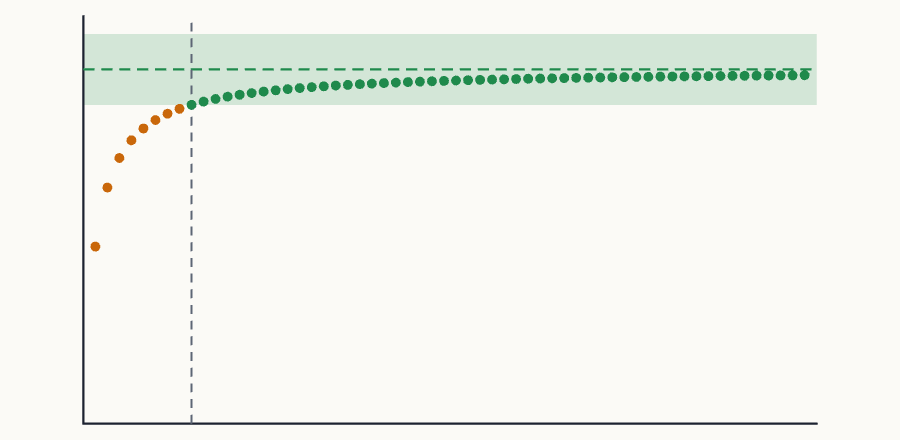

Qué es una sucesión, qué significa que «tienda» a un número (o a infinito), cómo se calculan límites sin usar la definición y qué hacer con las indeterminaciones. Es el primer «paso al límite» del curso: series, continuidad y derivadas se construyen sobre él.
Libro oficial: Cálculo para Ingenieros, §1.2 (pp. 22-33)Ejercicios: E Ej. 1.6–1.16 (pp. 10-20)⏱ ~8 h de estudio
U oficial
S Stewart
L Larson
E ejercicios
X exámenes
P propio
— pasa el ratón (o toca) por cada etiqueta para ver libro y página; en pantallas anchas aparecen en el margen derecho.
La idea del tema en una frase
Una sucesión es una lista infinita de números; decimos que converge a $l$ cuando, si esperas lo bastante, todos los términos quedan tan cerca de $l$ como tú quieras. Con esa idea, «un proceso infinito» (que ningún ser finito puede recorrer) se controla con una sola condición finita.
Si solo tienes un rato, llévate esto. El resto de la página lo desarrolla con ejemplos y ejercicios.
Método en 4 pasos
Sustituye $n$ por $\infty$ y nombra lo que sale: un número, $\pm\infty$, una indeterminación ($\tfrac\infty\infty$, $\infty-\infty$, $1^\infty$, $\pm\infty\cdot0$…) o una suma de $n$ términos.
Elige la herramienta según lo que salga: dividir entre lo que domina, conjugado, número $e$, emparedado o «acotada por infinitésimo», Stolz.
Si te piden una propiedad (¿converge?, ¿está acotada?, ¿puede ocurrir…?), no calcules: usa un teorema (convergente $\Rightarrow$ acotada; monótona y acotada $\Rightarrow$ convergente) o un ejemplo sencillo como $(-1)^n$.
Antes de usar un teorema, escribe sus hipótesis (los límites existen; en Stolz, $b_n$ creciente y $\to\infty$; en $1^\infty$, base $\to1$) y termina con una frase que responda a lo pedido.
Qué hago según el tipo
¿Cociente de polinomios, raíces o exponenciales ($\tfrac\infty\infty$)? $\to$ divide arriba y abajo entre lo que domina (saca $n$ de cada raíz).
¿$\infty-\infty$ con raíces? $\to$ multiplica y divide por el conjugado y luego divide entre $n$.
¿Potencia con base $\to1$ y exponente $\to\pm\infty$? $\to$ $e^{\lim_{n\to\infty} y_n(x_n-1)}$.
¿Potencia con base $\to x\neq1$? $\to$ no es indeterminación: $x^\infty=0$ si $0<x<1$ y $\infty$ si $x>1$.
¿Seno, coseno o algo acotado dividido entre algo que crece? $\to$ acotada $\times$ infinitésimo $=0$ (o emparedado).
¿Suma de $n$ términos? $\to$ acótala por el menor y el mayor (emparedado) o usa Stolz.
¿Recurrencia o sucesión creciente/decreciente? $\to$ monótona y acotada converge; el valor sale de $L=g(L)$.
Sucesiones crecientes/decrecientes y recurrencias.
Qué cae
En los exámenes resueltos hay 12 preguntas de este tema (alrededor del 4 % de todas), casi siempre cortas, de 1 punto: cocientes con raíces, conjugado, $1^\infty$, potencias con base distinta de $1$ y acotada por infinitésimo. En el libro de ejercicios son E 1.6-1.16. Tabla por tipo: pestaña Examen.
U pp.23-33P
Camino de estudio: elige tu nivel
Empieza por «Mínimo»; luego «Completo» y, para nota alta, «Reto». Marca cada ejercicio al terminarlo.
La definición de límite (2), el álgebra de límites (5), las indeterminaciones y el conjugado (7), las monótonas (8), el número $e$ (9) y Stolz (10), con el mapa de decisión.
Valor absoluto y distancia: $|a-b|$ es la distancia entre $a$ y $b$; desigualdad triangular $|x+y|\le|x|+|y|$ y su variante $\big||x|-|y|\big|\le|x-y|$. Tema 1.1, apartado 3.
Cotas, supremo y axioma del supremo (para la sucesión monótona) y propiedad arquimediana (para «$1/n$ se hace tan pequeño como quieras»). Tema 1.1, apartados 5-8.
Funciones conocidas (U p. 29): polinomios, trigonométricas, exponencial $e^x$ y logaritmo $\ln x$. Y el factorial: $n!=n(n-1)\cdots2\cdot1$, con $0!=1$ (U p. 25, nota al margen).
Mapa del tema: qué se pide en los ejercicios y en el examen
Los once ejercicios de E de esta sección (1.6 a 1.16) piden: razonar con la definición de convergencia y de divergencia (1.6); calcular límites de cocientes con potencias, exponenciales y raíces (1.7, 1.8, 1.9); resolver $\infty-\infty$ con el conjugado (1.10, 1.12); acotar una suma de $n$ términos con el emparedado (1.11); calcular potencias $a_n^{b_n}$ con y sin indeterminación (1.13, 1.14) y usar el criterio de Stolz (1.15, 1.16). E pp.10-20
1Sucesiones U pp.22-23
Lo que vas a aprender. reconocer una sucesión, darla por fórmula, por lista o por recurrencia, y dibujarla sobre la recta.
Idea intuitiva
Una sucesión es una lista infinita con orden: primer término, segundo, tercero… como los vagones numerados de un tren que no acaba nunca, o el saldo de una cuenta al final de cada mes. A cada número natural $n$ (el «número de vagón») le corresponde un número real $a_n$ (lo que lleva ese vagón). Por eso, técnicamente, es una función de $\mathbb N$ en $\mathbb R$.
U p.22S p.690
Definición 1.9 (sucesión)
Una sucesión de números reales es una aplicación $a:\mathbb N\to\mathbb R$. Se escribe $a_n$ en lugar de $a(n)$: $a_1$ es el primer término, $a_7$ el séptimo. Si todos los términos se dan por una fórmula (p. ej. $a_n=\ln n$), esa fórmula es el término general. La sucesión completa se abrevia $\{a_n\}$.
U pp.22-23
Ejemplos 1.14 y 1.15 de U
$a(n)=\pi$ es una sucesión constante: todos sus términos valen $\pi$.
$a(n)=2n-1$ toma los números impares: $a_1=1,\ a_2=3,\ a_3=5,\dots$
U p.22
Tres formas de dar una sucesión S pp.690-691U p.33U p.23
Fórmula (término general). $a_n=\dfrac n{n+1}$ da $\frac12,\frac23,\frac34,\frac45,\dots$
Lista con un patrón. De $\frac35,-\frac4{25},\frac5{125},-\frac6{625},\dots$ se deduce $a_n=(-1)^{n-1}\dfrac{n+2}{5^n}$: los numeradores suben de 1 en 1 empezando en 3, los denominadores son potencias de 5 y el signo alterna.
Recursiva: se dan los primeros términos y una regla que calcula cada uno con los anteriores. La sucesión de Fibonacci: $a_1=1,\ a_2=1,\ a_n=a_{n-1}+a_{n-2}$ para $n>2$, que da $1,1,2,3,5,8,\dots$
También pueden empezar en $n=0$ (o en otro entero); entonces el primer término es $a_0$.
Cómo se «ve» una sucesión: dos dibujos S p.691
Hay dos formas útiles de dibujarla: (a) sus términos como puntos sobre la recta real (ver cómo se amontonan), y (b) su gráfica, que son puntos aislados $(n,a_n)$ (ver la evolución con $n$; la tienes en el interactivo del apartado 2). Se usan las dos a lo largo del tema.
Primeros términos de $a_n=\frac n{n+1}$ sobre la recta real: cada uno queda a la derecha del anterior y se amontonan junto a 1.
Error típico
Confundir la sucesión $\{a_n\}$ (lista ordenada e infinita) con el conjunto de sus valores $\{a_n:n\in\mathbb N\}$: la sucesión $(-1)^n$ tiene infinitos términos, pero su conjunto de valores es $\{-1,1\}$. Y tampoco es una serie (una suma infinita): eso viene en el apartado 11 y en el tema 1.3.
2Límite de una sucesión: convergencia U pp.23-24
Lo que vas a aprender. qué significa que una sucesión «tienda» a $l$ (definición $\varepsilon$–$N$), probarlo en un caso sencillo y reconocer una que no converge.
Idea intuitiva: el juego del reto
Alguien te dice que $\{a_n\}$ tiende a $l$. Tú lanzas un reto: «¿estás a menos de $\varepsilon=0{,}001$ de $l$?». La sucesión responde con un número $N$: «a partir del término $N$, todos los términos están a esa distancia de $l$ o menos». Da igual lo pequeño que sea el reto $\varepsilon$: siempre hay respuesta (aunque $N$ sea cada vez mayor). Lo que ocurre al principio no importa, solo el final.
U p.23S p.692
Definición 1.10 (límite; sucesión convergente)
Una sucesión $\{a_n\}$ tiene límite $l\in\mathbb R$ si para cada $\varepsilon>0$ existe un número natural $N$ tal que
$$|a_n-l|\le\varepsilon\qquad\text{para todo } n\ge N.$$
Se escribe $\displaystyle\lim_{n\to\infty}a_n=l$ y se dice que $\{a_n\}$ es convergente.
U p.23S p.692L p.585
Cómo leerla. $|a_n-l|\le\varepsilon$ significa $l-\varepsilon\le a_n\le l+\varepsilon$: el término $a_n$ está en el intervalo de centro $l$ y radio $\varepsilon$. Por tanto: cualquier intervalo abierto que contenga a $l$ contiene a todos los términos salvo, quizá, un número finito de ellos (U p. 23). $N$ es un natural cualquiera que funcione.

Interactivo propio: el juego del reto. Tú eliges $\varepsilon$ con el primer deslizador (la banda verde es $(L-\varepsilon,L+\varepsilon)$) y la escena calcula el primer $N$ tal que todos los términos desde $N$ están dentro (puntos verdes; los naranjas están fuera). Estrecha la banda: $N$ crece, pero para cualquier $\varepsilon$ existe. Con $a_n=\frac n{n+1}$ y $\varepsilon=0{,}1$ sale $N=9$ (los puntos huecos son los de $n=1,\dots,8$, fuera de la banda); con $(-1)^n/n$ los puntos saltan de un lado al otro y aun así entran en la banda. P
Ejemplo 1.16: sucesión constante
Si $a_n=c$ para todo $n$, entonces $\lim_{n\to\infty} a_n=c$: dado $\varepsilon>0$, $|a_n-c|=0<\varepsilon$ para todo $n\in\mathbb N$ (sirve cualquier $N$).
U p.23
Ejemplo 1.17: $\lim_{n\to\infty}\frac1n=0$ con la definición
Distancia al supuesto límite: $|a_n-0|=\left|\frac1n\right|=\frac1n$.
Dado $\varepsilon>0$ queremos $\frac1n\le\varepsilon$ para todo $n\ge N$. Como $n\ge N\Rightarrow\frac1n\le\frac1N$, basta con que $\frac1N\le\varepsilon$, es decir, $\frac1\varepsilon\le N$.
Tomamos como $N$ el primer natural mayor que $\frac1\varepsilon$ (existe por la propiedad arquimediana, tema 1.1). Con $\varepsilon=\frac1{1000}$ vale $N=1001$; con $\varepsilon=12$ vale $N=1$.
U p.24
Receta: probar $\lim_{n\to\infty} a_n=l$ con la definición
Calcula y simplifica $|a_n-l|$.
Resuelve la desigualdad $|a_n-l|\le\varepsilon$ para $n$ (o busca una expresión mayor y más sencilla que $|a_n-l|$ que sea fácil de resolver).
Elige $N$ natural que cumpla esa condición. Si $|a_n-l|$ (o la cota que uses) decrece con $n$, basta comprobarlo en $n=N$: para $n\ge N$ será aún menor.
Ejemplo propio: $a_n=\frac n{n+1}\to1$. $|a_n-1|=\frac1{n+1}\le\varepsilon\iff n\ge\frac1\varepsilon-1$. Para $\varepsilon=0{,}1$ basta $N=9$: comprobamos $a_9=0{,}9$ y $|0{,}9-1|=0{,}1\le0{,}1$. Es el caso del interactivo de arriba.
P
Para comprobar con ordenador
Con Maxima: la sucesión $\frac1n$ se define con a[n]:=1/n y el límite se calcula con limit(a[n],n,inf); el factorial $7!$ se escribe 7!;. Sirve para comprobar tus resultados, no para razonarlos.
U pp.23-25
Error típico
(1) $N$ depende de $\varepsilon$: no se puede fijar $N$ antes de que te den $\varepsilon$. (2) La condición es para todos los $n\ge N$, no solo para uno: $\{(-1)^n\}$ pasa por 1 infinitas veces y no converge a 1. (3) El límite no tiene por qué alcanzarse ni la sucesión acercarse siempre «por un lado»: $\frac{(-1)^n}{n}$ converge a 0 alternando de lado.
Unicidad del límite
Unicidad
Si $\{a_n\}$ converge, su límite es único: no puede tender a dos números distintos a la vez.
Prueba (la «receta» de U, completada). Supón $a_n\to l$ y $a_n\to m$ con $l\ne m$ y sea $L=|l-m|>0$. Tomando $\varepsilon=L/3$ en la definición, existen $N_1,N_2$ con $|a_n-l|\le L/3$ si $n\ge N_1$ y $|a_n-m|\le L/3$ si $n\ge N_2$. Para $n\ge\max\{N_1,N_2\}$, por la desigualdad triangular, $L=|l-m|=|(l-a_n)+(a_n-m)|\le\frac L3+\frac L3=\frac{2L}3<L$. Absurdo; luego $l=m$.
U p.24
¿Y si no converge? «Divergente»
Sucesión divergente
Una sucesión que no converge se llama divergente. Puede serlo de dos maneras: porque sus términos crecen (o decrecen) sin límite (límite $\pm\infty$, apartado 6) o porque oscila sin acercarse a nada, como $(-1)^n$.
S p.692L p.585U p.28
$\{(-1)^n\}$ no converge (prueba)
Los términos son $-1,1,-1,1,\dots$ Si tendiera a un $l$, con $\varepsilon=\frac12$ existiría $N$ tal que para $n\ge N$: $|a_n-l|\le\frac12$ y $|a_{n+1}-l|\le\frac12$. Pero entonces $2=|a_{n+1}-a_n|\le|a_{n+1}-l|+|l-a_n|\le1$, absurdo. Luego diverge (oscila).
U p.24S p.695
3Sucesiones acotadas U p.24
Lo que vas a aprender. qué es una sucesión acotada y por qué convergente implica acotada (y no al revés).
Idea intuitiva
Una sucesión está acotada si vive dentro de un «corral»: existe una valla de altura $c$ y otra de altura $-c$ que ningún término salta. Una sucesión convergente no puede escaparse: casi todos sus términos están pegados a $l$ y solo quedan unos pocos «rezagados» del principio, que siempre se pueden encerrar.
P
Definición 1.11 (sucesión acotada)
$\{a_n\}$ es acotada si existe $c>0$ tal que $|a_n|\le c$ para todo $n\in\mathbb N$; es decir, si el conjunto $\{a_n:n\in\mathbb N\}$ está acotado (tema 1.1).
Equivale a tener una cota superior $M$ y una inferior $m$ ($m\le a_n\le M$): basta $c=\max\{|m|,|M|,1\}$.
U p.24S p.697L p.591
Proposición 1.1 (convergente ⇒ acotada)
Toda sucesión convergente es acotada. (Su recíproco es falso.)
Prueba. Sea $a_n\to l$. Con $\varepsilon=1$ hay $N$ con $|a_n-l|\le1$ para $n\ge N$, luego $|a_n|\le|l|+1$ para $n\ge N$ (triangular). Sea $c=\max\{|a_1|,\dots,|a_{N-1}|,\,|l|+1\}$: es un máximo de un número finito de valores y $c\ge1>0$. Entonces $|a_n|\le c$ para todo $n$.
U p.24
La sucesión $(-1)^n+\frac1n$ (U Ejemplo 1.20, p. 26) está acotada ($|a_n|\le2$) y no converge: los términos pares (azul) se acercan a 1 y los impares (naranja) a $-1$.
Cómo se usa
Probar «$P\Rightarrow Q$» equivale a probar «no $Q\Rightarrow$ no $P$» (la contrarrecíproca). Aquí es la herramienta práctica: si una sucesión no está acotada, no converge. Así, $a_n=n$ o $a_n=n^2-n$ divergen sin más cálculo (U lo llama «condición necesaria para la convergencia», p. 24). Pero acotada no implica convergente: $(-1)^n$, y también $(-1)^n+\frac1n$ de la figura.
U p.24
4Regla del emparedado y «tiende a 0 por acotada» U pp.25-26
Lo que vas a aprender. calcular límites con senos, cosenos y sumas de $n$ términos usando el emparedado y «acotada por infinitésimo».
Idea intuitiva: el bocadillo
Si un jamón está siempre entre dos panes y los dos panes se juntan en el mismo punto, el jamón queda aplastado en ese punto. La dificultad es que de entrada solo tienes el jamón (la sucesión que quieres estudiar): hay que encontrar los panes, y eso se aprende con práctica (U p. 25).
U p.25S p.694
Regla del emparedado
Si $a_n\le b_n\le c_n$ para todo $n\in\mathbb N$ y $\displaystyle\lim_{n\to\infty} a_n=\lim_{n\to\infty} c_n=l$, entonces $\displaystyle\lim_{n\to\infty} b_n=l$.
Versión «a partir de un $N$»: basta que $a_n\le b_n\le c_n$ desde cierto $n_0$ en adelante, porque el límite solo depende del final de la sucesión (U p. 23). Es la que usan los ejercicios.
U p.25S p.694L p.587
Ejemplo 1.18 de U: $0\le\frac1{n^2}\le\frac1n$ y ambos «panes» tienden a 0; el «jamón» $\frac1{n^2}$ queda comprimido entre ellos.
Ejemplo 1.18: $\lim_{n\to\infty}\frac1{n^2}=0$
Para todo $n\in\mathbb N$, $0\le\frac1{n^2}\le\frac1n$. Como $\lim_{n\to\infty}0=0$ y $\lim_{n\to\infty}\frac1n=0$ (Ejemplos 1.16-1.17), la regla del emparedado da $\lim_{n\to\infty}\frac1{n^2}=0$.
U p.25
Teorema 1.2 (infinitésimo por acotada)
Si $\lim_{n\to\infty} a_n=0$ y $\{b_n\}$ es acotada, entonces $\lim_{n\to\infty}(a_nb_n)=0$.
Idea de la prueba. Sea $|b_n|\le c$. Entonces $-c|a_n|\le a_nb_n\le c|a_n|$; como $\big||a_n|-0\big|=|a_n-0|$, la definición da $|a_n|\to0$ y por tanto $c|a_n|\to0$; el emparedado da el resultado. Ojo: no vale si $\{b_n\}$ no está acotada ($\frac1n\cdot n=1$). Otro ejemplo: $\frac{\operatorname{sen}n}n\to0$ (ver Propio C1).
U p.25
Ejemplo 1.19
$\displaystyle\lim_{n\to\infty}\frac1n\cos^2\!\left(\frac{\exp\frac{n^2}{\sqrt[n]{(n+1)!}}}{\ln|n+2|}\right)=0$. La función coseno toma valores en $[-1,1]$, así que $\cos^2(\cdots)\in[0,1]$ es una sucesión acotada (no importa lo complicado que sea su argumento); y $\frac1n\to0$. Por el Teorema 1.2 el límite existe y es $0$.
U p.25
Proposición 1.2 (valor absoluto) y su recíproco
Si $\lim_{n\to\infty} a_n=l$, entonces $\lim_{n\to\infty}|a_n|=|l|$. Se cumple porque $\big||a_n|-|l|\big|\le|a_n-l|$ (Teorema 1.1 de 1.1). El recíproco solo es cierto si $l=0$: si $|a_n|\to0$ entonces $a_n\to0$, por el emparedado $-|a_n|\le a_n\le|a_n|$. En general es falso: $\{(-1)^n+\frac1n\}$ no converge pero su valor absoluto converge a 1 (U Ejemplo 1.20, figura de la p. 26).
U pp.25-26S p.694L p.588
5Álgebra de límites U pp.26-27
Lo que vas a aprender. calcular límites de sumas, productos y cocientes de sucesiones, y saber cuándo NO se puede usar el álgebra de límites.
Idea intuitiva
Si $a_n$ se aproxima a $l$ y $b_n$ a $m$, es natural que $a_n+b_n$ se aproxime a $l+m$, $a_nb_n$ a $lm$ y $\frac{a_n}{b_n}$ a $\frac lm$ (si $m\ne0$). Es la Proposición 1.3: permite calcular límites «por piezas», con una condición: las piezas deben tener límite (finito).
U p.26
Proposición 1.3 (suma, producto y cociente)
Hipótesis: los límites de $a_n$ y de $b_n$ existen y son finitos. Entonces:
Aplicar la Prop. 1.3 directamente falla: ni el numerador ni el denominador tienen límite finito.
Dividimos numerador y denominador entre $n^2$ (la mayor potencia del denominador): $\displaystyle\frac{2+\frac1n+\frac1{n^2}}{1-\frac1n+\frac1{n^2}}$.
Ahora cada pieza tiene límite ($\frac1n\to0$, $\frac1{n^2}\to0$) y el denominador tiende a $1\ne0$: el límite es $\dfrac{2+0+0}{1-0+0}=2$.
U pp.26-27S p.694
Truco de examen
En un cociente de expresiones polinómicas, divide numerador y denominador entre el monomio de mayor grado del denominador (U p. 27). Adelanto para calcular «de cabeza»: manda el término de mayor grado, y el resultado depende de los grados: mismo grado → cociente de coeficientes principales; mayor grado arriba → $\pm\infty$; mayor grado abajo → 0.
U p.27
Errores típicos con la Proposición 1.3
Aplicarla sin que existan los límites: $a_n=n$, $b_n=\frac1n$ tiene $\lim_{n\to\infty} a_nb_n=1$, pero no es $\lim_{n\to\infty} n\cdot0$.
Usarla con un número de sumandos que crece con $n$: la suma de límites solo vale para un número fijo de sumandos: $\underbrace{\frac1n+\cdots+\frac1n}_{n\text{ veces}}=1$, no $0$. Se explica en el Ejercicio 1.11.
Dividir por un $b_n$ cuyo límite es 0 (eso da una indeterminación, apartado 7).
6Límites infinitos y la recta ampliada U pp.27-28
Lo que vas a aprender. qué significa tender a $\pm\infty$ y operar con la recta ampliada ($\frac x\infty$, $x^\infty$…).
Idea intuitiva
Algunas sucesiones no se acercan a ningún número, pero su comportamiento es claro: $n$, $n^2-n$… crecen sin techo. Para hablar de ello y poder «calcular» con ellas, se añaden a $\mathbb R$ dos símbolos, $-\infty$ y $+\infty$, con las reglas de cálculo que esperaríamos. Ojo: $\infty$ no es un número; es una abreviatura de «crece sin límite».
U p.27
Definición 1.12 (recta real ampliada)
$\overline{\mathbb R}=\mathbb R\cup\{-\infty,\infty\}$, con $-\infty<x<\infty$ para todo $x\in\mathbb R$ y las operaciones de $\mathbb R$ ampliadas así:
Regla
Vale para
Ejemplo
$\dfrac x\infty=\dfrac x{-\infty}=0$
$x\in\mathbb R$
$\dfrac5\infty=0$
$x+\infty=\infty$
$x\in\overline{\mathbb R}$, $x\ne-\infty$
$-7+\infty=\infty$
$x-\infty=-\infty$
$x\in\overline{\mathbb R}$, $x\ne\infty$
$3-\infty=-\infty$
$x\cdot\infty=\infty$
$x\in(0,\infty]$
$2\cdot\infty=\infty$
$x\cdot\infty=-\infty$
$x\in[-\infty,0)$
$(-2)\cdot\infty=-\infty$
$x^\infty=0$
$x\in(0,1)$
$\left(\frac12\right)^\infty=0$
$x^\infty=\infty$
$x\in(1,\infty]$
$e^\infty=\infty$
$\infty^x=\infty$
$x\in(0,\infty]$
$\infty^2=\infty$
$\infty^x=0$
$x\in[-\infty,0)$
$\infty^{-1}=0$
Cómo leer la tabla: $\infty$ no es un número; cada regla abrevia un límite. Por ejemplo, «$x+\infty=\infty$» significa que si $a_n\to x$ y $b_n\to\infty$, entonces $a_n+b_n\to\infty$; lo mismo vale para $\cdot$, $-$, potencias… (así se usa en la Prop. 1.4, U p.28). Por ejemplo, «$\left(\frac12\right)^\infty=0$» quiere decir que $\left(\frac12\right)^n\to0$: $0{,}5^{10}\approx0{,}001$ y $0{,}5^{100}\approx8\cdot10^{-31}$.
La tabla recoge las reglas básicas. Hay otras expresiones que no son indeterminaciones ($e^{-\infty}=0$, $0^{+\infty}=0$…). Las siete indeterminaciones del apartado 7 son las que no tienen valor fijo.
U p.27
Límite infinito
$\displaystyle\lim_{n\to\infty} a_n=\infty$ si para cada $k>0$ existe $N\in\mathbb N$ tal que $a_n\ge k$ para todo $n\ge N$. $\ \lim_{n\to\infty} a_n=-\infty$ si $\lim_{n\to\infty}(-a_n)=\infty$. Dicho de otro modo: para cualquier cantidad $k>0$ solo hay un número finito de términos menores que $k$.
Las sucesiones con límite $\pm\infty$ no son convergentes (convergente = límite en $\mathbb R$): son divergentes «de un modo especial». Una sucesión con límite $\pm\infty$ es no acotada.
U p.28S p.693L p.585
Ejemplo 1.22: $\lim_{n\to\infty}(n^2-n)=\infty$ con la definición
Dado $\varepsilon>0$ (aquí hace de «$k$») queremos $n^2-n\ge\varepsilon$ para $n\ge N$.
Para $n\ge2$: $n-1\ge1$, luego $n^2-n=n(n-1)\ge n$.
Tomando $N\ge\max\{2,\varepsilon\}$: si $n\ge N$, entonces $n\ge2$ y $\ n^2-n\ge n\ge N\ge\varepsilon$.
Hay que exigir $N\ge2$.
U p.28
Proposición 1.4 y regla de «sustituir $n$ por $\infty$»
La regla del emparedado y las Proposiciones 1.2 y 1.3 siguen siendo válidas si alguno o todos los límites que intervienen valen $\pm\infty$ (y las operaciones se hacen en $\overline{\mathbb R}$ según la Def. 1.12). Como es sencillo probar que $\lim_{n\to\infty} n=\infty$, si al sustituir $n$ por $\infty$ en el término general las operaciones están definidas (no es una indeterminación), el resultado es el límite.
Tratar $\infty$ como un número cualquiera: $\infty-\infty=0$ o $\frac\infty\infty=1$ son falsos (apartado 7). Y decir «$\lim_{n\to\infty} n=\infty$ luego converge»: no converge, diverge a $\infty$.
7Indeterminaciones, conjugado y la fórmula (1.1) U pp.29-30
Lo que vas a aprender. reconocer las siete indeterminaciones y resolver $\infty-\infty$ con el conjugado y las potencias con la fórmula (1.1).
Idea intuitiva: ¿por qué «indeterminación»?
Una expresión como $\infty-\infty$ no tiene valor fijo: depende de quién gana la carrera. Con $n-n=0$, $(n+5)-n=5$ y $n^2-n\to\infty$ tenemos tres sucesiones de la forma «$\infty-\infty$» con tres límites distintos. Por eso, al sustituir $n$ por $\infty$ y encontrar una de estas formas, no se puede concluir nada: hay que transformar la expresión.
PU p.29
Las siete indeterminaciones
Cuatro «de operaciones» (p. 29): $\ \dfrac00,\quad\infty-\infty,\quad\pm\infty\cdot0,\quad\dfrac{\pm\infty}{\pm\infty}$.
Y tres «de potencias» (p. 30), que llevan a $\pm\infty\cdot0$ mediante (1.1): $\ 0^0,\quad1^{\pm\infty},\quad\infty^0$.
U pp.29-30
Conjugado: $\infty-\infty$ con raíces
Ejemplo 1.24 y el truco del conjugado
$\displaystyle\lim_{n\to\infty}(n^2-n)$ sin usar la definición. Al sustituir sale $\infty-\infty$. Multiplicamos y dividimos por el conjugado $n^2+n$, usando $(A-B)(A+B)=A^2-B^2$:
$$n^2-n=\frac{(n^2-n)(n^2+n)}{n^2+n}=\frac{n^4-n^2}{n^2+n}=\frac{n^2-1}{1+\frac1n}\quad(\text{dividiendo entre }n^2)\ \longrightarrow\ \frac\infty1=\infty.$$
Regla de U: si $\infty-\infty$ procede de $a_n-b_n$, suele ser buena idea multiplicar y dividir por $a_n+b_n$.
U p.29
Potencias: la fórmula (1.1)
Fórmula (1.1)
Si $a_n>0$ para todo $n$:
$$\lim_{n\to\infty} a_n^{\,b_n}=\lim_{n\to\infty} e^{\,b_n\ln a_n}=e^{\lim_{n\to\infty} b_n\ln a_n}\qquad(\text{si el último límite existe en }\overline{\mathbb R}).$$
Se basa en $a_n^{b_n}=e^{\ln a_n^{b_n}}=e^{b_n\ln a_n}$ y en poder intercambiar el límite con una función continua (aquí $e^x$).
U p.29
Intercambiar límite y función continua
Si $\lim_{n\to\infty} a_n=l$ y $f$ es continua en $l$ (con $a_n$ en el dominio de $f$), entonces $\lim_{n\to\infty} f(a_n)=f(l)$. U lo aplica a las funciones que «el lector debe conocer»: polinómicas, trigonométricas, exponenciales y logarítmicas (la continuidad se estudia en el tema 1.4). Las raíces también son continuas: $\sqrt x=e^{\frac12\ln x}$ para $x>0$, así que $\sqrt{a_n}\to\sqrt l$ (S p. 693, potencia $p>0$).
La base se hace muy pequeña (casi $0$) y se multiplica por sí misma $n$ veces, cada vez más veces: el resultado se hace $0$. Ejemplo numérico: $n=10$ da $\left(\frac{10}{103}\right)^{10}\approx7\cdot10^{-11}$; con $n=100$ es aún mucho menor.
Mirar la base y el exponente por separado. Base: $\dfrac n{n^2+3}$. Dividiendo arriba y abajo entre $n$ queda $\dfrac1{n+\frac3n}\to0$ (el denominador crece sin límite). Además la base es siempre $>0$. Exponente: $n\to+\infty$. Es del tipo «$0^{\infty}$», que no es indeterminación (apartado 6); lo comprobamos con la fórmula (1.1).
Escribirlo con $e$ (fórmula 1.1). Como la base es positiva, $a_n^{\,b_n}=e^{\,b_n\ln a_n}$. Aquí:
$$\left(\frac n{n^2+3}\right)^{n}=e^{\,n\cdot\ln\frac n{n^2+3}}.$$
Límite del logaritmo. Cuando un número positivo se acerca a $0$, su $\ln$ se va a $-\infty$ (p.ej. $\ln0{,}001\approx-6{,}9$, $\ln10^{-9}\approx-20{,}7$). Como la base tiende a $0^+$:
$$\ln\frac n{n^2+3}\longrightarrow-\infty.$$
Límite del exponente. $n\to+\infty$ y $\ln\frac n{n^2+3}\to-\infty$; «$(+\infty)\cdot(-\infty)=-\infty$». Es decir, el exponente de $e$ tiende a $-\infty$.
Último paso. $e^{-\infty}=\lim_{t\to-\infty}e^{t}=0$ (p.ej. $e^{-20}\approx2\cdot10^{-9}$).
Resultado: $\displaystyle\lim_{n\to\infty}\left(\frac n{n^2+3}\right)^{n}=\mathbf{0}$. Receta (potencia $a_n^{b_n}$): si $a_n>0$, pasa a $e^{b_n\ln a_n}$, calcula el límite de $b_n\ln a_n$ (puede ser $\pm\infty$) y aplica $e^{+\infty}=+\infty$, $e^{-\infty}=0$.
U p.30
Error típico
«$1^\infty=1$» o «$0^0=1$» o «$\infty^0=1$»: son indeterminaciones. Y sustituir solo en una parte: $\left(1+\frac1n\right)^n\to1^\infty=1$ es falso; su límite es $e$ (apartado 9). También: aplicar (1.1) con $a_n$ que pueda ser $\le0$ ($\ln$ no está definido).
U p.30
8Sucesiones monótonas U p.31
Lo que vas a aprender. usar que una sucesión monótona converge si y solo si está acotada.
Idea intuitiva
Una sucesión monótona siempre avanza en el mismo sentido sobre la recta: cada término queda a la derecha (o a la izquierda) del anterior (U p. 31). Si además tiene un techo, no puede escaparse hacia arriba ni retroceder: se ve forzada a amontonarse contra algún número. Es como subir una escalera con un techo encima: al final solo puedes acercarte al techo.
U p.31S p.698
Definición 1.13 (monotonía)
$\{a_n\}$ es creciente si $a_n\le a_{n+1}$ para todo $n$; decreciente si $a_n\ge a_{n+1}$ para todo $n$.
Es estrictamente creciente (resp. decreciente) si $a_n<a_{n+1}$ (resp. $a_n>a_{n+1}$) para todo $n$.
Es monótona si es creciente o decreciente.
U p.31S p.696L p.590
Ejemplos 1.27 y 1.28
Una sucesión constante como $\{4\}$ es monótona (creciente y decreciente a la vez) pero no estrictamente.
$a_n=\frac1n$ es estrictamente decreciente: $a_{n+1}=\frac1{n+1}<\frac1n=a_n$.
U p.31
Cómo probar que es monótona
Estudia el signo de $a_{n+1}-a_n$ (o, con términos positivos, compara $\frac{a_{n+1}}{a_n}$ con 1). Ejemplo (L Ej. 8b): $b_n=\frac{2n}{1+n}$ es creciente porque $\frac{2n}{1+n}<\frac{2(n+1)}{2+n}\iff2n(2+n)<2(n+1)^2\iff4n+2n^2<2n^2+4n+2\iff0<2$, y todos los pasos son reversibles. (Cuando sepas derivar, otra vía es ver que la función $f(x)$ correspondiente es creciente: L p. 590, S Ej. 13 p. 697.)
L p.590S p.697
Teorema 1.3 (monótona: convergente ⇔ acotada)
Si $\{a_n\}$ es monótona, entonces: $\{a_n\}$ es convergente si y solo si es acotada.
Prueba. ($\Rightarrow$) es la Proposición 1.1. ($\Leftarrow$) Supón $\{a_n\}$ creciente y acotada. El conjunto $\{a_n\}$ es no vacío y acotado superiormente, así que por el axioma del supremo (tema 1.1) tiene supremo $L$. Dado $\varepsilon>0$, $L-\varepsilon$ no es cota superior, luego existe $N$ con $a_N>L-\varepsilon$. Para $n\ge N$: $L-\varepsilon<a_N\le a_n\le L$, o sea $|a_n-L|<\varepsilon$. Así $a_n\to L$. El caso decreciente es simétrico (con el ínfimo).
Consecuencia: una monótona siempre tiene límite en $\overline{\mathbb R}$: si no está acotada, tiende a $\pm\infty$ (creciente no acotada: para cada $k$ hay $a_N\ge k$ y luego $a_n\ge a_N\ge k$ si $n\ge N$).
U p.31S p.698L p.591
Ejemplos de uso (L Ejemplo 9)
$\{\frac1n\}$ es acotada y monótona: converge (a 0).
$\left\{\frac{n^2}{n+1}\right\}$ es monótona pero no acotada (crece sin techo): diverge.
$\{(-1)^n\}$ es acotada pero no monótona: diverge.
L p.591
Un uso típico: sucesión recursiva (S Ejemplo 14)
$a_1=2,\ a_{n+1}=\frac12(a_n+6)$. Los primeros términos $2,4,5,5{,}5,5{,}75,\dots$ sugieren que crece hacia 6.
Creciente (inducción): $a_2=4>a_1$; si $a_{k+1}>a_k$, entonces $\frac12(a_{k+1}+6)>\frac12(a_k+6)$, es decir $a_{k+2}>a_{k+1}$.
Acotada: $a_n<6$ para todo $n$. Se cumple para $n=1$; si $a_k<6$, entonces $a_{k+1}=\frac12(a_k+6)<\frac12(12)=6$. Y $a_n\ge a_1=2$.
Por el Teorema 1.3 existe $L=\lim_{n\to\infty} a_n$. Como $a_{n+1}$ también tiende a $L$, en la recurrencia queda $L=\frac12(L+6)$, luego $L=6$. (El teorema garantiza que el límite existe; no dice cuánto vale: eso se saca de la recurrencia.)
S p.699
Los términos $2,\,4,\,5,\,5{,}5,\,5{,}75,\dots$ son crecientes, quedan siempre por debajo de $6$ y se acercan a la recta $y=6$: creciente y acotada, luego converge; el límite $L=\frac12(L+6)$ da $6$. Pasa el ratón por la gráfica (o toca; o usa ← →) para leer las coordenadas. P
Error típico
El teorema exige las dos hipótesis a la vez, monótona y acotada: sola, la acotación no basta ($(-1)^n$) ni la monotonía ($n$). Y no da el valor del límite. Otro error: pensar que «monótona» significa «estrictamente creciente»; las constantes son monótonas (Ej. 1.27) y una constante es creciente.
9El número $e$ y la indeterminación $1^{\pm\infty}$ U pp.31-32
Lo que vas a aprender. resolver la indeterminación $1^{\pm\infty}$ con el número $e$.
Idea intuitiva: el interés compuesto
En $\left(1+\frac1n\right)^n$ hay dos fuerzas opuestas: la base $1+\frac1n$ baja hacia $1$ (y $1^n=1$ no crecería), pero el exponente $n$ crece (y una base mayor que 1 elevada a un exponente enorme crece). El resultado de esa «pelea» no es $1$ ni $\infty$: la sucesión es creciente, queda siempre por debajo de $e$ y se estabiliza en $e\approx2{,}71828$. (Es el capital final de 1 euro al 100 % anual capitalizado $n$ veces al año.)
$n$
1
10
100
1000
$10^6$
$(1+1/n)^n$
2
2,5937
2,7048
2,7169
2,71828
PL p.585
Los términos $\left(1+\frac1n\right)^n$ crecen siempre y quedan por debajo de la recta $y=e\approx2{,}718$, a la que se acercan: es el interés compuesto del euro al $100\,\%$. Pasa el ratón por la gráfica (o toca; o usa ← →) para leer las coordenadas. P
Proposición 1.5
Si $\lim_{n\to\infty} a_n=\pm\infty$, entonces
$$\lim_{n\to\infty}\left(1+\frac1{a_n}\right)^{a_n}=e.$$
(Con $a_n\to\pm\infty$ se tiene $|a_n|>1$ desde cierto $n$, así que $1+\frac1{a_n}>0$ y la potencia está definida.)
Por las propiedades de las potencias, $\left(1+\frac1{n^2}\right)^{2n^2}=\left[\left(1+\frac1{n^2}\right)^{n^2}\right]^2$. Como $a_n=n^2\to\infty$, el corchete tiende a $e$ (Prop. 1.5) y, al intercambiar límite y potencia (función continua), el límite es $e^2$.
U p.32
Receta para $1^{\pm\infty}$
Clasifica: base $x_n\to1$ y exponente $y_n\to\pm\infty$.
Escribe la base como $1+\frac1{a_n}$, es decir $a_n=\frac1{x_n-1}$ (definido si $x_n\ne1$; tiende a $\pm\infty$ si $x_n-1$ tiende a 0 con signo constante: base siempre mayor, o siempre menor, que 1).
Reparte el exponente: $x_n^{y_n}=\Big[\big(1+\frac1{a_n}\big)^{a_n}\Big]^{s_n}$ con $s_n=\frac{y_n}{a_n}=y_n(x_n-1)$.
Si $s_n\to s\in\mathbb R$, el corchete tiende a $e$ y por (1.1) el límite es $e^s$. En resumen: $\lim_{n\to\infty} x_n^{y_n}=e^{\lim_{n\to\infty} y_n(x_n-1)}$. Si $s_n\to\pm\infty$, el resultado es $e^{\pm\infty}$ ($\infty$ o $0$), por (1.1).
(Deducción propia a partir de U Prop. 1.5 y (1.1); se practica en los Ejercicios 1.13 y 1.16.)
P
Error típico
Aplicar la técnica del número $e$ a algo que no es $1^\infty$ (p. ej. base que tiende a $\frac12$ o a $2$: entonces basta la Def. 1.12 y (1.1), ver Ejercicio 1.14), o no conseguir que el exponente sea el mismo $a_n$ que aparece en $1+\frac1{a_n}$.
10Criterio de Stolz U pp.32-33
Lo que vas a aprender. calcular cocientes con una suma de $n$ términos con el criterio de Stolz.
Idea intuitiva
Si el numerador $a_n$ crece «$X$ unidades por paso» y el denominador $b_n$ crece «$Y$ unidades por paso», al cabo de mucho tiempo su cociente vale aproximadamente $\frac XY$. Stolz formaliza eso: sustituye el cociente $\frac{a_n}{b_n}$ (difícil, típicamente $\frac\infty\infty$) por el cociente de incrementos $\frac{a_{n+1}-a_n}{b_{n+1}-b_n}$ (más fácil). Es el análogo, para sucesiones, de comparar derivadas.
P
Criterio de Stolz
Sean $\{a_n\}$, $\{b_n\}$ sucesiones con
$$\lim_{n\to\infty}\frac{a_{n+1}-a_n}{b_{n+1}-b_n}=l\in\mathbb R.$$
Entonces $\displaystyle\lim_{n\to\infty}\frac{a_n}{b_n}=l$, siempre que se cumpla alguna de estas dos condiciones:
(i) $\{b_n\}$ es monótona y $\lim_{n\to\infty} b_n=\pm\infty$; o
(ii) $\{b_n\}$ es monótona y $\lim_{n\to\infty} b_n=\lim_{n\to\infty} a_n=0$.
Precisiones: (a) para que el cociente de incrementos tenga sentido hace falta $b_{n+1}\ne b_n$ (en la práctica $b_n$ estrictamente monótona); (b) el criterio se enuncia con $l\in\mathbb R$; también vale con $l=\pm\infty$ (E p. 18) si $b_n$ es estrictamente monótona con límite $\pm\infty$, pero para examen cíñete a $l$ finito; (c) el recíproco es falso: con $b_n=n$ y $a_n=n+(-1)^n$ se tiene $\frac{a_n}{b_n}=1+\frac{(-1)^n}n\to1$ (Teorema 1.2), pero $a_{n+1}-a_n=1-2(-1)^n$ vale alternadamente $3$ y $-1$ y no tiene límite. Si el cociente de incrementos no tiene límite, Stolz no dice nada.
Sean $a_n=1+3+\cdots+(2n+1)$ y $b_n=2+4+\cdots+(2n+2)$. Ambas son crecientes y tienden a $\infty$ (a cada término positivo se le suma una cantidad cada vez mayor). Se cumple (i).
Sustituir $n\to n+1$: $a_{n+1}=a_n+(2(n+1)+1)$ y $b_{n+1}=b_n+(2(n+1)+2)$. Por tanto $a_{n+1}-a_n=2n+3$ y $b_{n+1}-b_n=2n+4$.
$\displaystyle\lim_{n\to\infty}\frac{2n+3}{2n+4}=1$. Por Stolz, el límite pedido es $1$.
U pp.32-33
Como $1+3+\cdots+(2n+1)=(n+1)^2$ y $2+4+\cdots+(2n+2)=(n+1)(n+2)$, el cociente de las sumas es $\frac{n+1}{n+2}$: sube hacia la recta $y=1$, que es el límite (y el de los incrementos $\frac{2n+3}{2n+4}$). Pasa el ratón por la gráfica (o toca; o usa ← →) para leer las coordenadas. P
Cuándo usar Stolz
Cuando el cociente es de la forma $\frac\infty\infty$ (o $\frac00$, caso (ii)) y el numerador (o el denominador) es una suma con $n$ sumandos, o contiene logaritmos: $\frac{1^2+\cdots+n^2}{n^3}$, $\frac{\ln n}n$, $\frac1{n^2}\big(\text{suma}\big)$. El motivo: si $a_n$ es una suma de $n$ términos, $a_{n+1}-a_n$ es solo el último sumando y la suma desaparece (Ejercicio 1.16). Pasos: (1) identifica $a_n$ y $b_n$; (2) comprueba las hipótesis sobre $b_n$; (3) calcula $a_{n+1}-a_n$ y $b_{n+1}-b_n$; (4) calcula el límite del cociente.
P
11Sucesión de sumas parciales (avance de las series) U p.34
Lo que vas a aprender. ver cómo una serie se reduce a la sucesión de sus sumas parciales (avance del tema 1.3).
Idea intuitiva
¿Cómo se suma una cantidad infinita de números? No se puede hacer «de golpe», pero sí se pueden sumar los primeros $n$, para cada $n$, y ver si esas sumas se estabilizan. Eso es una sucesión: la de sumas parciales. El tema 1.3 (series) es exactamente el estudio del límite de esa sucesión.
U pp.33-34
Sucesión de sumas parciales
A partir de $\{a_n\}$ se define $\{s_n\}$ con $s_1=a_1$, $s_2=a_1+a_2$, …, $s_n=\displaystyle\sum_{i=1}^na_i$. Es la sucesión de sumas parciales de $\{a_n\}$. Una serie es el par $(\{a_n\},\{s_n\})$ (U Def. 1.14), y es convergente si $\{s_n\}$ converge (U Def. 1.15, p. 35); se estudia en el tema 1.3.
Ejemplo propio: con $a_n=\frac1{2^n}$, $s_n=\frac12+\frac14+\cdots+\frac1{2^n}=1-\frac1{2^n}\to1$ (porque $0\le\frac1{2^n}\le\frac1n$ y el emparedado da $\frac1{2^n}\to0$).
U p.34U p.35L p.595
No confundir
Los Ejercicios 1.11 y 1.16 tienen una suma finita de $n$ términos: son sucesiones, no series.
12Mapa de decisión: qué tipo de límite tengo y qué hago P
Lo que vas a aprender. a reconocer, en cuanto lees el enunciado, de qué tipo de límite o de pregunta se trata y qué herramienta usar (mapa de decisión y, desplegable, cuadro con el detalle de cada caso).
Léelo de arriba abajo: en cada pregunta, «no» baja a la siguiente y «sí» te lleva a la acción de la derecha. Antes de nada, sustituye $n$ por $\infty$ y mira qué sale (Prop. 1.4): si el resultado está definido en $\overline{\mathbb R}$, ya has acabado.
Ver el cuadro «Si ves… haz…» con los ejercicios de cada caso
Lo que ves
Qué hacer
Dónde
Cociente $\frac\infty\infty$ de polinomios, exponenciales…
Dividir numerador y denominador entre lo que domina
Dado $\varepsilon$, si $n\ge(1/\varepsilon)^{1/r}$ entonces $n^r\ge1/\varepsilon$. (S ec. 4, p. 693)
$n^r$, $r>0$
$\infty$
Dado $k>0$, si $n\ge k^{1/r}$ entonces $n^r\ge k$ (definición de límite infinito, U p. 28)
$r^n$
$0$ si $|r|<1$ (incluye $r=0$); $1$ si $r=1$; $\infty$ si $r>1$; no converge si $r\le-1$
$r>0$: $r^n=e^{n\ln r}$ con (1.1). $-1<r<0$: $|r|^n\to0$ y apartado 4. $r=-1$: oscila. $r<-1$: $|r|^n\to\infty$, no acotada. (S Ej. 11, p. 696)
$\sqrt[n]a$, $a>0$
$1$
$a^{1/n}=e^{(\ln a)/n}\to e^0$, por (1.1)
$\sqrt[n]n$
$1$
Ejercicio 1.15 (Stolz)
$\dfrac{\ln n}n$
$0$
Ejercicio 1.15 (Stolz)
$\left(1+\dfrac1n\right)^n$
$e$
Prop. 1.5
$\dfrac{n!}{n^n}$
$0$
$0\le\frac{n!}{n^n}=\frac1n\cdot\frac2n\cdots\frac nn\le\frac1n$ (S Ej. 10, pp. 695-696)
Regla práctica (no demostrada aquí en general): para $n$ grande, $\ln n\ll n^p\ll a^n\ll n!\ll n^n$ ($p>0$, $a>1$), donde «$\ll$» significa «crece mucho más despacio que». Sirve para saber qué domina en un cociente. De ella solo se prueban aquí algunos casos (los de la tabla). L p. 587 comenta que $n!$ crece más rápido que cualquier exponencial.
S pp.693-696L p.587P
Orden de ataque recomendado en el examen
Nombra el tipo de pregunta y, si es un límite, sustituye $n$ por $\infty$ para ver qué sale.
Si hay álgebra sencilla (dividir entre lo que domina, conjugado), úsala: es lo más corto y seguro.
Si hay una potencia, mira primero a qué tienden la base y el exponente por separado; solo $1^{\pm\infty}$ pide el número $e$.
Antes de usar un teorema, escribe sus hipótesis (los límites existen, $b_n$ creciente y $\to\infty$ en Stolz, monótona y acotada) y comprueba que se cumplen.
Termina con una frase completa que responda a lo que se pregunta.
13Practica P
Lo que vas a aprender. a resolver tú solo un ejemplo de cada tipo. Intenta cada uno antes de abrir la pista; empieza por los ★ (los ★★ son ampliación).
Ahora hazlo tú
Antes de calcular, sustituye $n$ por $\infty$: lo que sale ($\frac\infty\infty$, $\infty-\infty$, $1^\infty$, una suma de $n$ términos, una recurrencia…) te dice el método.
No hace falta desarrollar el cubo: divide arriba y abajo entre $n^3$ y mete el $n^3$ dentro del cubo como $\big(\frac{2n+1}n\big)^3$.
Ver solución
Sustituir: arriba $(+\infty)^3=+\infty$; abajo $4n^3-n^2+7=n^2(4n-1)+7\to+\infty$. Sale $\frac\infty\infty$, indeterminación (U p.30).
Dividir entre $n^3$ (el grado de los dos): arriba $\frac{(2n+1)^3}{n^3}=\big(\frac{2n+1}{n}\big)^3=\big(2+\frac1n\big)^3$; abajo $4-\frac1n+\frac7{n^3}$.
Pasar al límite con el álgebra de límites (U Prop. 1.3, p.26): $\frac1n\to0$ y $\frac7{n^3}\to0$, así que queda $\dfrac{(2+0)^3}{4-0+0}=\dfrac84=2$.
Comprobación a ojo: arriba manda $(2n)^3=8n^3$ y abajo $4n^3$; el cociente de los coeficientes principales es $\frac84$.
Resultado: $2$
★★ Medio Práctica a2 · raíz cúbica y raíz cuadrada P
Cada término se comporta como una potencia de $n$: $\sqrt[3]{27n^3}=3n$, $\sqrt n=n^{1/2}$, $\sqrt{n^2}=n$. La mayor es $n$: divide todo entre $n$.
Ver solución
Sustituir: el denominador tiende a $+\infty$ y el numerador es una resta $\infty-\infty$. Antes de nada, se ve qué manda: $\sqrt[3]{27n^3+n^2}\approx3n$ crece mucho más que $\sqrt n$, así que se espera $\frac{3n}{2n}=\frac32$.
Dividir arriba y abajo entre $n$, metiendo $n$ dentro de cada raíz: $n=\sqrt[3]{n^3}$ en la cúbica y $n=\sqrt{n^2}$ en la cuadrada ($n>0$):
$$\frac{\sqrt[3]{27+\frac1n}-\frac{\sqrt n}{n}}{\sqrt{1+\frac1{n^2}}+1}.$$
El término de en medio: $\frac{\sqrt n}n=\frac1{\sqrt n}\to0$ (porque $\sqrt n\to+\infty$ y $\frac{x}{\infty}=0$, U Def. 1.12, p.27).
Las raíces: $27+\frac1n\to27$ y la raíz cúbica es continua, así que $\sqrt[3]{27+\frac1n}\to3$; igual $\sqrt{1+\frac1{n^2}}\to1$ (cambiar límite por función continua, U p.29).
Álgebra de límites (U Prop. 1.3, p.26), con denominador $\to2\neq0$: $\dfrac{3-0}{1+1}=\dfrac32$.
Es $\infty-\infty$ con una raíz: multiplica y divide por $\sqrt{4n^2+n}+2n$.
Ver solución
Sustituir: $\sqrt{4n^2+n}\to+\infty$ y $2n\to+\infty$: sale $\infty-\infty$ (U p.29). Los términos dominantes $\sqrt{4n^2}=2n$ y $2n$ se cancelan: decide lo que queda.
Conjugado, con $(A-B)(A+B)=A^2-B^2$ (U Ej. 1.24, p.29): $$\sqrt{4n^2+n}-2n=\frac{(4n^2+n)-4n^2}{\sqrt{4n^2+n}+2n}=\frac{n}{\sqrt{4n^2+n}+2n}.$$
Dividir entre $n$ (con $\sqrt{4n^2+n}=n\sqrt{4+\frac1n}$): $\dfrac{1}{\sqrt{4+\frac1n}+2}$.
Límite: $\sqrt{4+\frac1n}\to2$, así que queda $\frac1{2+2}=\frac14$.
Resultado: $\frac14$
★★ Medio Práctica b2 · conjugado de una raíz cúbica P
Con raíces cúbicas el «conjugado» sale de $A^3-B^3=(A-B)(A^2+AB+B^2)$: multiplica y divide por $A^2+AB+B^2$, con $A=\sqrt[3]{n^3+3n^2}$ y $B=n$.
Ver solución
Sustituir: $\infty-\infty$. Con la raíz cuadrada se usaba $(A-B)(A+B)=A^2-B^2$; aquí la raíz es cúbica, así que hace falta elevar al cubo.
Identidad: $A^3-B^3=(A-B)(A^2+AB+B^2)$ (se comprueba multiplicando). Como $A,B>0$, $A^2+AB+B^2>0$ y se puede dividir: $$A-B=\frac{A^3-B^3}{A^2+AB+B^2}=\frac{(n^3+3n^2)-n^3}{A^2+An+n^2}=\frac{3n^2}{A^2+An+n^2}.$$
Dividir arriba y abajo entre $n^2$. Como $A=n\sqrt[3]{1+\frac3n}$, se tiene $\frac{A}{n}=\sqrt[3]{1+\frac3n}\to1$, y $$\frac{3}{\big(\frac An\big)^2+\frac An+1}\longrightarrow\frac{3}{1+1+1}=1.$$
Comprobación numérica: para $n=100$, $\sqrt[3]{1030000}-100\approx0{,}99$.
$\cos(n^2)$ y $\operatorname{sen}n$ no tienen límite, pero están entre $-1$ y $1$. Divide entre $n$: quedan «acotada entre algo que tiende a infinito».
Ver solución
Lo que no se puede hacer: calcular $\lim_{n\to\infty}\cos(n^2)$ por separado (no existe). No hace falta: solo se usa que $|\cos(n^2)|\le1$ y $|\operatorname{sen}n|\le1$. En particular $3n-\operatorname{sen}n\ge3n-1>0$: el denominador nunca se anula.
Dividir entre $n$: $\dfrac{2+\frac{\cos(n^2)}{n}}{3-\frac{\operatorname{sen}n}{n}}$.
Acotada por infinitésimo: $\frac1n\to0$ y $\cos(n^2)$ está acotada, así que $\frac{\cos(n^2)}n\to0$ (U Teorema 1.2, p.25); lo mismo $\frac{\operatorname{sen}n}n\to0$. Con el emparedado: $-\frac1n\le\frac{\cos(n^2)}n\le\frac1n$.
Álgebra de límites (U Prop. 1.3, p.26): $\dfrac{2+0}{3-0}=\dfrac23$.
Hay $n$ sumandos: no vale «suma de límites». Acota cada denominador entre $n^2+1$ y $n^2+n$ y usa $1+2+\cdots+n=\frac{n(n+1)}2$.
Ver solución
Escribir la suma: $s_n=\sum_{k=1}^n\frac{k}{n^2+k}$. Cada sumando tiende a $0$, pero cada vez hay más: la Prop. 1.3 solo vale para un número fijo de sumandos.
Acotar cada sumando. Para $1\le k\le n$, $n^2+1\le n^2+k\le n^2+n$; al dividir $k>0$ entre un número mayor sale algo menor: $$\frac{k}{n^2+n}\le\frac{k}{n^2+k}\le\frac{k}{n^2+1}.$$ Ojo: el numerador $k$ cambia de un sumando a otro, así que se conserva (no se sustituye por $n$).
Sumar en $k$: como $1+2+\cdots+n=\frac{n(n+1)}2$ (se suman $n$ parejas $1+n$, $2+(n-1)$… y se divide entre 2), $$\frac{n(n+1)}{2(n^2+n)}\le s_n\le\frac{n(n+1)}{2(n^2+1)}.$$
Los «panes»: el de la izquierda es exactamente $\frac{n(n+1)}{2n(n+1)}=\frac12$; el de la derecha, dividiendo entre $n^2$, es $\dfrac{1+\frac1n}{2+\frac2{n^2}}\to\frac12$.
Regla del emparedado (U p.25): $\lim_{n\to\infty}s_n=\frac12$. Comprobación: $s_{100}\approx0{,}5016$.
Base $\to1$ y exponente $\to\infty$: es $1^\infty$. Calcula $\lim_{n\to\infty}y_n(x_n-1)$ y eleva $e$ a ese número.
Ver solución
Clasificar: la base $x_n=\frac{3n-1}{3n+2}=\frac{3-\frac1n}{3+\frac2n}\to1$ y el exponente $y_n=n\to+\infty$: forma $1^\infty$, indeterminada (U p.30). No vale «$1^\infty=1$».
Base menos 1: $x_n-1=\frac{(3n-1)-(3n+2)}{3n+2}=\frac{-3}{3n+2}$, siempre negativo (signo constante, como pide la receta del número $e$).
Receta $1^\infty$ (de U Prop. 1.5, p.31, y la fórmula (1.1), p.29): $\lim_{n\to\infty}x_n^{y_n}=e^{\lim_{n\to\infty}y_n(x_n-1)}=e^{-1}$.
Resultado: $e^{-1}=\frac1e$
★★ Medio Práctica d2 · $1^\infty$ con parámetro P
Según el valor de $p>0$, calcula $\displaystyle\lim_{n\to\infty}\left(1+\frac1{n^p}\right)^{n}$.
Pista
Siempre es $1^\infty$. El exponente de $e$ es $n\cdot\frac1{n^p}=n^{1-p}$: mira si tiende a $\infty$, a $1$ o a $0$.
Ver solución
Clasificar: con $p>0$, $n^p\to+\infty$, así que la base $1+\frac1{n^p}\to1$; el exponente $n\to+\infty$. Para todo $p>0$ es $1^\infty$.
Producto $y_n(x_n-1)$: $x_n-1=\frac1{n^p}>0$ (signo constante) y $n\cdot\frac1{n^p}=n^{1-p}$.
Tres casos para $n^{1-p}$: si $0<p<1$, el exponente $1-p>0$ y $n^{1-p}\to+\infty$; si $p=1$, $n^0=1$; si $p>1$, $n^{1-p}=\frac1{n^{p-1}}\to0$.
Aplicar la receta $1^\infty$ (U Prop. 1.5, p.31, y (1.1), p.29), que también vale cuando el exponente de $e$ tiende a $\pm\infty$: $e^{+\infty}=+\infty$ (U Def. 1.12, p.27), $e^{1}=e$ y $e^{0}=1$.
Moraleja: $1^\infty$ puede dar cualquier cosa ($1$, $e$, $+\infty$…); por eso es una indeterminación. El caso $p=1$ es la definición de $e$.
Resultado: $+\infty$ si $0<p<1$; $e$ si $p=1$; $1$ si $p>1$
Criterio de Stolz
★ Básico Práctica e1 · suma de potencias de 2 P
Calcula $\displaystyle\lim_{n\to\infty}\frac{2+2^2+2^3+\cdots+2^n}{2^n}$ con el criterio de Stolz.
Pista
Numerador $a_n$ = la suma; denominador $b_n=2^n$. Al restar $a_{n+1}-a_n$ queda solo el último sumando, $2^{n+1}$.
Ver solución
Identificar: $a_n=2+2^2+\cdots+2^n$ y $b_n=2^n$. Los dos tienden a $+\infty$: forma $\frac\infty\infty$.
Hipótesis de Stolz (U p.32): $b_n=2^n$ es estrictamente creciente ($2^{n+1}=2\cdot2^n>2^n$) y $b_n\to+\infty$ ✓.
Incrementos: $a_{n+1}-a_n=2^{n+1}$ (la suma desaparece) y $b_{n+1}-b_n=2^{n+1}-2^n=2^n$.
Cociente de incrementos: $\dfrac{2^{n+1}}{2^n}=2$ para todo $n$, así que su límite es $2$. Por Stolz, el límite pedido es $2$.
Comprobación (suma geométrica): $a_n=2^{n+1}-2$, luego $\frac{a_n}{b_n}=2-\frac{2}{2^n}\to2$. Primeros valores: $1,\ \frac32,\ \frac74,\dots$
Stolz con $b_n=n\sqrt n=n^{3/2}$. Para el incremento $(n+1)^{3/2}-n^{3/2}$, multiplica por el conjugado $(n+1)^{3/2}+n^{3/2}$.
Ver solución
Identificar: $a_n=\sqrt1+\cdots+\sqrt n$ (suma de $n$ términos) y $b_n=n\sqrt n$. Forma $\frac\infty\infty$.
Hipótesis de Stolz (U p.32): $b_n=n^{3/2}$ es estrictamente creciente (producto de dos sucesiones positivas crecientes) y tiende a $+\infty$ ✓.
Incrementos: $a_{n+1}-a_n=\sqrt{n+1}$. Para $b_{n+1}-b_n$, conjugado: $$(n+1)^{3/2}-n^{3/2}=\frac{(n+1)^3-n^3}{(n+1)^{3/2}+n^{3/2}}=\frac{3n^2+3n+1}{(n+1)^{3/2}+n^{3/2}}.$$
Cociente de incrementos: $$\frac{\sqrt{n+1}\,\big((n+1)^{3/2}+n^{3/2}\big)}{3n^2+3n+1}=\frac{(n+1)^2+\sqrt{n+1}\,n^{3/2}}{3n^2+3n+1}.$$
Dividir entre $n^2$: arriba $\big(1+\frac1n\big)^2+\sqrt{1+\frac1n}\to1+1=2$ (porque $\sqrt{n+1}\,n^{3/2}=n^2\sqrt{1+\frac1n}$); abajo $3+\frac3n+\frac1{n^2}\to3$. El cociente tiende a $\frac23$ y, por Stolz, también el límite pedido. Comprobación: para $n=1000$ el cociente vale $\approx0{,}6668$.
Resultado: $\frac23$
Monotonía y acotación (término general)
★ Básico Práctica f1 · creciente y acotada P
Sea $a_n=\dfrac{3n+1}{n+2}$. Prueba que es creciente y acotada, deduce que converge y halla su límite.
Pista
Monotonía: signo de $a_{n+1}-a_n$. Cota: escribe $3-a_n$ como una fracción y mira su signo.
Ver solución
Creciente (U Def. 1.13, p.31): $$a_{n+1}-a_n=\frac{3n+4}{n+3}-\frac{3n+1}{n+2}=\frac{(3n+4)(n+2)-(3n+1)(n+3)}{(n+2)(n+3)}=\frac{5}{(n+2)(n+3)}>0.$$ Es estrictamente creciente.
Cota superior: $3-a_n=\frac{3(n+2)-(3n+1)}{n+2}=\frac5{n+2}>0$, así que $a_n<3$.
Cota inferior: al ser creciente, $a_n\ge a_1=\frac43$. Por tanto $\frac43\le a_n<3$: acotada.
Converge por el Teorema 1.3 (U p.31): monótona y acotada. El teorema no da el valor.
Valor: dividiendo entre $n$, $a_n=\dfrac{3+\frac1n}{1+\frac2n}\to3$. (También se ve en el paso 2: $3-a_n=\frac5{n+2}\to0$.)
Resultado: creciente, $\frac43\le a_n<3$ y $\lim_{n\to\infty}a_n=3$
★★ Medio Práctica f2 · cociente de términos consecutivos P
Sea $b_n=\dfrac{n}{2^n}$. Prueba que es decreciente y acotada y, usando que $b_{n+1}=\dfrac{n+1}{2n}\,b_n$, halla su límite.
Pista
Con términos positivos, compara $\frac{b_{n+1}}{b_n}$ con $1$. Para el límite: si $b_n\to L$, también $b_{n+1}\to L$; pasa al límite en la igualdad del enunciado.
Decreciente: $\frac{n+1}{2n}\le1\iff n+1\le2n\iff n\ge1$, cierto siempre. Como $b_n>0$, $b_{n+1}\le b_n$ (U Def. 1.13, p.31). No es estrictamente decreciente: $b_1=b_2=\frac12$.
Acotada: $0<b_n\le b_1=\frac12$.
Existe el límite por el Teorema 1.3 (U p.31): llamémoslo $L$. Además $b_{n+1}\to L$ (es la misma sucesión desplazada un lugar: solo importa el final).
Pasar al límite en $b_{n+1}=\frac{n+1}{2n}b_n$: $\frac{n+1}{2n}\to\frac12$, y por el álgebra de límites (U Prop. 1.3, p.26) queda $L=\frac12L$, es decir $L=0$.
Resultado: decreciente, $0<b_n\le\frac12$ y $\lim_{n\to\infty}b_n=0$
Sucesiones por recurrencia
★ Básico Práctica g1 · recurrencia con raíz P
Sea $a_1=1$ y $a_{n+1}=\sqrt{2a_n+3}$. Prueba que $\{a_n\}$ es creciente y que $a_n<3$ para todo $n$, y calcula su límite.
Pista
Las dos propiedades se prueban por inducción. Para el límite, pasa al límite en la recurrencia: $L=\sqrt{2L+3}$, y descarta la solución imposible.
Ver solución
Primeros términos: $a_1=1$, $a_2=\sqrt5\approx2{,}236$, $a_3\approx2{,}734$, $a_4\approx2{,}910$: parece crecer hacia $3$.
Cota $a_n<3$ (inducción): $a_1=1<3$. Si $a_k<3$, entonces $2a_k+3<9$ y, como la raíz es creciente, $a_{k+1}=\sqrt{2a_k+3}<\sqrt9=3$.
Creciente (inducción): $a_2=\sqrt5>1=a_1$. Si $a_{k+1}>a_k$, entonces $2a_{k+1}+3>2a_k+3$ y, tomando raíces, $a_{k+2}>a_{k+1}$.
Existe el límite $L$ por el Teorema 1.3 (U p.31): creciente y acotada ($1\le a_n<3$). Además $L\ge a_1=1$.
Valor: $a_{n+1}\to L$ y, por continuidad de la raíz (U p.29), $\sqrt{2a_n+3}\to\sqrt{2L+3}$. Luego $L=\sqrt{2L+3}$; elevando al cuadrado, $L^2-2L-3=0$, con soluciones $3$ y $-1$. Como $L\ge1$, $L=3$.
Resultado: $\lim_{n\to\infty}a_n=3$
★★ Medio Práctica g2 · la recurrencia que da $\sqrt2$ P
Sea $a_1=2$ y $a_{n+1}=\dfrac12\left(a_n+\dfrac2{a_n}\right)$. Prueba que $a_n\ge\sqrt2$ para todo $n$, que $\{a_n\}$ es decreciente y calcula su límite.
Pista
Comprueba que $a_{n+1}^2-2=\frac14\big(a_n-\frac2{a_n}\big)^2\ge0$. Para la monotonía, simplifica $a_{n+1}-a_n$.
Ver solución
Primeros términos: $a_1=2$, $a_2=\frac32$, $a_3=\frac{17}{12}\approx1{,}4167$, $a_4=\frac{577}{408}\approx1{,}414216$; parece bajar hacia $\sqrt2\approx1{,}414214$. Todos son positivos: si $a_n>0$, también $a_{n+1}>0$ (suma de positivos).
Cota inferior: desarrollando el cuadrado, $$a_{n+1}^2-2=\frac14\Big(a_n^2+4+\frac4{a_n^2}\Big)-2=\frac14\Big(a_n^2-4+\frac4{a_n^2}\Big)=\frac14\Big(a_n-\frac2{a_n}\Big)^2\ge0.$$ Así $a_{n+1}^2\ge2$ y, al ser positivo, $a_{n+1}\ge\sqrt2$. Con $a_1=2\ge\sqrt2$, vale para todo $n$.
Decreciente: $a_{n+1}-a_n=\frac{2}{2a_n}-\frac{a_n}2=\frac{2-a_n^2}{2a_n}\le0$, porque $a_n^2\ge2$ y $a_n>0$ (U Def. 1.13, p.31).
Existe el límite $L$ por el Teorema 1.3 (U p.31): decreciente y acotada ($\sqrt2\le a_n\le2$). Además $L\ge\sqrt2>0$.
Valor: como $L\neq0$, el álgebra de límites (U Prop. 1.3, p.26) permite pasar al límite en el cociente: $L=\frac12\big(L+\frac2L\big)\iff2L=L+\frac2L\iff L^2=2$. Con $L>0$, $L=\sqrt2$.
Comentario: es una sucesión de números racionales cuyo límite no es racional (tema 1.1): $\mathbb Q$ «tiene huecos» y $\mathbb R$ los rellena.
Resultado: $\lim_{n\to\infty}a_n=\sqrt2$
14Errores típicos y autoevaluación P
Lo que vas a aprender. a detectar tus fallos antes del examen: 10 preguntas rápidas; cada una es un error típico, con su explicación al responder.
1. (V/F) Toda sucesión acotada es convergente.
Es al revés: convergente $\Rightarrow$ acotada (U Prop. 1.1, p.24). $a_n=(-1)^n$ está acotada ($|a_n|\le1$) y no converge.
2. (V/F) Si $\displaystyle\lim_{n\to\infty}a_n=0$, entonces $\displaystyle\lim_{n\to\infty}a_nb_n=0$ para cualquier sucesión $\{b_n\}$.
Hace falta que $\{b_n\}$ esté acotada (U Teorema 1.2, p.25). Con $a_n=\frac1n$ y $b_n=n^2$, $a_nb_n=n\to+\infty$: es $0\cdot\infty$, una indeterminación.
Es $1^\infty$: el límite es $e^{\lim_{n\to\infty}n^2\cdot\frac1n}=e^{\lim_{n\to\infty}n}=e^{+\infty}=+\infty$. Contestar $e$ es copiar la definición de $e$ sin mirar el exponente.
4. (V/F) Si la base tiende a $1$ y el exponente a $+\infty$, el límite de la potencia es $1$, porque $1$ elevado a cualquier cosa es $1$.
$1^\infty$ es una indeterminación (U p.30): la base no es exactamente $1$. $\left(1+\frac1n\right)^n\to e$ (U Prop. 1.5, p.31) y $\left(1+\frac2n\right)^n\to e^2$.
Manda $5^n$: dividiendo entre $5^n$ queda $\frac{1-(2/5)^n}{1+(3/5)^n}\to\frac{1-0}{1+0}=1$, porque $x^\infty=0$ para $x\in(0,1)$ (U Def. 1.12, p.27).
6. (V/F) Si $\{a_n\}$ es monótona y acotada, el Teorema 1.3 dice que converge y además nos da el valor del límite.
Solo garantiza que el límite existe (U Teorema 1.3, p.31). El valor se obtiene después: con la recurrencia ($L=g(L)$) o calculándolo directamente.
7. (V/F) Toda sucesión creciente está acotada inferiormente.
Si $a_n\le a_{n+1}$ para todo $n$, entonces $a_1\le a_n$ para todo $n$: $a_1$ es cota inferior. Por eso, para una creciente solo hay que buscar la cota superior.
La base tiende a $\frac12$, no a $1$: no es $1^\infty$ y no hay que usar $e$. Para $n\ge2$, $0<\frac{n+1}{2n}\le\frac34$, luego $0<a_n\le\left(\frac34\right)^n\to0$.
9. (V/F) Si $\displaystyle\lim_{n\to\infty}\frac{a_n}{b_n}=l$ (con $b_n=n$), entonces $\displaystyle\lim_{n\to\infty}\frac{a_{n+1}-a_n}{b_{n+1}-b_n}=l$.
El recíproco de Stolz es falso. Con $a_n=n+(-1)^n$, $\frac{a_n}{n}\to1$, pero $a_{n+1}-a_n$ vale alternadamente $3$ y $-1$ y no tiene límite.
10. (Elige) Sea $a_1=0$ y $a_{n+1}=\sqrt{a_n+6}$ (creciente y acotada por $3$). Su límite es:
$L=\sqrt{L+6}$ da $L^2-L-6=0$, con soluciones $3$ y $-2$. Pero todos los términos son $\ge0$, así que $L\ge0$: $L=3$. Elevar al cuadrado puede introducir soluciones falsas; hay que descartarlas.
15Ejercicios del libro, resueltos E pp.10-20
Los ejercicios 1.6 a 1.16 de E están agrupados en cinco bloques, de fácil a difícil, conservando la numeración de E. Cada uno es una tarjeta: el enunciado se ve siempre; al abrir la solución encuentras «Antes de calcular» y la receta, y dentro el desarrollo paso a paso. Al final hay ejemplos propios de dificultad creciente.
Ver el orden recomendado, de fácil a difícil
Orden
Ejercicio
Tipo
1
1.8
Cociente con exponenciales
2
1.7
Cociente con una raíz
3
1.9
Cociente con dos raíces
4
1.10
$\infty-\infty$ con el conjugado
5
1.6
¿Puede converger $\{x_ny_n\}$? (razonar)
6
1.11
Emparedado con una suma de $n$ términos
7
1.12
Conjugado con parámetros
8
1.13
$1^\infty$
9
1.14
Potencia que no es indeterminación
10
1.15
$\sqrt[n]n$ con Stolz
11
1.16
Stolz con una suma de $n$ términos
Bloque A · Convergencia y cocientes (1.6 → 1.8 → 1.7 → 1.9)
La sucesión $\{x_n\}$ es convergente y la sucesión $\{y_n\}$ es divergente. Razone si puede ser convergente la sucesión $\{x_ny_n\}$.
Ver solución paso a paso
Antes de calcular
Qué me piden
Decidir si el producto de una sucesión convergente por una divergente puede converger, y justificarlo.
Cómo lo pienso
Una pregunta «¿puede…?» se contesta con un ejemplo. Si el factor convergente se va a 0 y el otro crece despacio, el 0 puede «ganar» y el producto converger; si el convergente se va a un número distinto de 0, la divergencia se contagia.
Qué uso
Álgebra de límites: si $\{x_ny_n\}$ converge con $y_n$ divergente, $x_n\to0$ (Prop. 1.3) — ver teoría (U p.26).
Por dónde empiezo
Elijo $y_n=n$ (divergente) y busco un $x_n$ convergente que lo compense.
Receta: ante «¿puede ocurrir…?», construye un ejemplo con las sucesiones más sencillas ($n$, $\frac1n$, $\frac1{n^2}$, $(-1)^n$). Ante «¿ocurre siempre?», busca un contraejemplo o razona por reducción al absurdo con la Prop. 1.3.
Ver resolución completa paso a paso
Qué se pregunta. «¿Puede ser…?» es una pregunta de existencia: basta un ejemplo. No hace falta que ocurra siempre (y no ocurre siempre; ver el paso 5).
Divergente: $y_n=n$, con límite $+\infty$ (U p. 28), luego no convergente.
Convergente: $x_n=\frac1{n^2}\to0$ (U Ejemplo 1.18). Entonces $x_ny_n=\frac n{n^2}=\frac1n\to0$ (U Ejemplo 1.17). Sí puede ser convergente. Otro ejemplo: con $x_n=\frac1n$ sale $x_ny_n=1$, constante y convergente.
El factor convergente tiene que tender a 0. Supón $x_n\to l\ne0$ y $x_ny_n\to m$. Con $\varepsilon=|l|/2$ en la Def. 1.10, $x_n\ne0$ desde cierto $n$ (solo importa el final). Entonces $y_n=\frac{x_ny_n}{x_n}\to\frac ml$ por la Prop. 1.3 (cociente): absurdo, porque $\{y_n\}$ diverge. Conclusión: si $\{x_ny_n\}$ converge, necesariamente $x_n\to0$.
Respuesta: sí puede (ejemplo $x_n=\frac1{n^2}$, $y_n=n$), pero solo si $x_n\to0$.
Error típico: responder «nunca» (porque la divergente lo estropea todo) o «siempre». Otro: usar $\lim_{n\to\infty} x_n\cdot\lim_{n\to\infty} y_n$ cuando $\lim_{n\to\infty} y_n$ no existe; la Prop. 1.3 exige que los dos límites existan. Comprobación: con $x_n=\frac1n$, $y_n=(-1)^n$ (oscila) el producto tiende a 0 (Teorema 1.2); con $x_n=1+\frac1n\to1\ne0$ e $y_n=n$ el producto tiende a $+\infty$.
★ BásicoMínimoEjercicio 1.8 · cociente con exponencialesE p.12
Sea $x_n=\dfrac{e^{\,n+\frac3n}+5}{2e^n}$. Se pide calcular su límite cuando $n\to+\infty$.
Arriba y abajo manda $e^n$. Si lo saco como factor, lo que sobra es $e^{3/n}$, que se parece a $e^0=1$, y $\frac5{e^n}$, que desaparece.
Qué uso
Dividir entre la exponencial que manda y $e^{a+b}=e^ae^b$; $\frac5\infty=0$ — ver teoría (U Def. 1.12, p.27).
Por dónde empiezo
Separo $e^{n+3/n}=e^n\,e^{3/n}$ y reparto el denominador en dos sumandos.
Receta: ante un cociente $\frac\infty\infty$, divide numerador y denominador entre lo que crece más deprisa ($n^k$, $e^n$…) y aplica la Prop. 1.3.
Ver resolución completa paso a paso
Sustituir. Numerador y denominador tienden a $+\infty$ ($e^\infty=\infty$ por Def. 1.12): sale $\frac\infty\infty$, indeterminación.
Separar lo que domina. $e^{n+3/n}=e^n\,e^{3/n}$, luego $$x_n=\frac{e^ne^{3/n}}{2e^n}+\frac5{2e^n}=\frac{e^{3/n}}2+\frac5{2e^n}.$$ (La misma idea que «dividir entre el término de mayor grado», pero aquí manda $e^n$.)
Primer sumando. $\frac3n\to0$; como la exponencial es continua, $e^{3/n}\to e^0=1$. El sumando tiende a $\frac12$.
Segundo sumando. $2e^n\to\infty$ y $\frac5\infty=0$ (Def. 1.12).
Los términos $x_n$ (puntos; la curva solo los une) bajan hacia la recta $y=\frac12$: $\lim_{n\to\infty}x_n=\frac12$. Pasa el ratón por la gráfica (o toca; o usa ← →) para leer las coordenadas. P
Error típico: escribir $e^{n+3/n}=e^n+e^{3/n}$. La exponencial convierte sumas en productos.
★ BásicoEjercicio 1.7 · cociente con una raízE pp.11-12
Sea $\{a_n\}$ la sucesión de término general $a_n=\dfrac n{\sqrt{n^3+4}}$. ¿Es convergente?
Ver solución paso a paso
Antes de calcular
Qué me piden
Decidir si $a_n=\frac n{\sqrt{n^3+4}}$ converge y, en tal caso, hallar el límite.
Cómo lo pienso
Dentro de la raíz el $4$ es un grano de arena frente a $n^3$, así que $\sqrt{n^3+4}\approx n^{3/2}$. Arriba hay $n$ y abajo algo mayor: el cociente se va a 0.
Qué uso
Sacar la mayor potencia de la raíz y dividir; potencia menor sobre mayor $\to0$ — ver teoría (U Prop. 1.3, p.26).
Por dónde empiezo
Saco $n^3$ como factor común dentro de la raíz.
Receta: si aparece la raíz de un polinomio, saca factor común dentro de la raíz la mayor potencia del radicando, pásala fuera con exponente $\frac12$ y compara exponentes arriba y abajo.
Ver resolución completa paso a paso
Al sustituir sale $\frac{+\infty}{+\infty}$, indeterminación.
Intuición. Dentro de la raíz domina $n^3$: $\sqrt{n^3+4}\approx n^{3/2}$ y $a_n\approx\frac n{n^{3/2}}=\frac1{\sqrt n}\to0$. Ahora se demuestra.
Factor común dentro de la raíz: $n^3+4=n^3\left(1+\frac4{n^3}\right)$ y $\sqrt{pq}=\sqrt p\sqrt q$ ($p,q\ge0$), así $\sqrt{n^3+4}=n^{3/2}\sqrt{1+4/n^3}$ y $$a_n=\frac1{n^{1/2}\sqrt{1+4/n^3}}.$$
Factores del denominador. $\sqrt n\to+\infty$ (dado $k>0$, si $n\ge k^2$ entonces $\sqrt n\ge k$). $1+\frac4{n^3}\to1$ y, por continuidad de la raíz, $\sqrt{1+4/n^3}\to1$.
Conclusión. El denominador tiende a $+\infty\cdot1=+\infty$ y el cociente a $\frac1{+\infty}=0$. Es convergente y $\lim_{n\to\infty} a_n=0$.
Otra vía (emparedado). $0\le\frac n{\sqrt{n^3+4}}\le\frac n{\sqrt{n^3}}=\frac1{\sqrt n}\to0$.
Los términos $a_n=\frac n{\sqrt{n^3+4}}$ se hunden hacia $0$ (grado $1$ arriba, $\frac32$ abajo): $\lim_{n\to\infty}a_n=0$, la sucesión converge. Pasa el ratón por la gráfica (o toca; o usa ← →) para leer las coordenadas. P
Error típico: $\sqrt{n^3+4}=\sqrt{n^3}+2$. La raíz no se reparte sobre una suma.
★ BásicoEjercicio 1.9 · cociente con dos raícesE pp.12-13
Sea $\{a_n\}$ la sucesión de término general $a_n=\dfrac{\sqrt{16n^4-4}}{n\sqrt{4n^2+5}}$. Se pide calcular su límite cuando $n\to\infty$.
Factor común en cada radicando: $\sqrt{16n^4-4}=n^2\sqrt{16-\frac4{n^4}}$ y $n\sqrt{4n^2+5}=n\cdot n\sqrt{4+\frac5{n^2}}=n^2\sqrt{4+\frac5{n^2}}$ (usamos $\sqrt{n^4}=n^2$, $\sqrt{n^2}=n$, ciertos porque $n>0$).
Límite. Numerador $\to\sqrt{16}=4$; denominador $\to\sqrt4=2\ne0$. Por la Prop. 1.3: $\lim_{n\to\infty} a_n=\boxed2$.
Los términos $a_n$ se acercan por debajo a la recta $y=2$: $\lim_{n\to\infty}a_n=\frac42=2$. Pasa el ratón por la gráfica (o toca; o usa ← →) para leer las coordenadas. P
Error típico: $\sqrt{16n^4-4}=4n^2-2$.
Bloque B · $\infty-\infty$ con raíces (1.10 → 1.12)
Teoría en el apartado 7 (indeterminaciones y conjugado).
★ BásicoMínimoEjercicio 1.10 · conjugado para $\infty-\infty$E pp.13-14
Son dos cantidades enormes y casi iguales: la resta depende de la pequeña diferencia entre ellas, que no se ve a ojo. Con el conjugado la resta se transforma en una fracción donde sí se ve.
Qué uso
Conjugado: $(A-B)(A+B)=A^2-B^2$; luego dividir entre $n$ — ver teoría (U Ej. 1.24, p.29).
Por dónde empiezo
Multiplico y divido por $\sqrt{n^2+4n+8}+n$.
Receta: $\infty-\infty$ con raíces $\Rightarrow$ multiplica por el conjugado; después divide entre la potencia dominante.
Ver resolución completa paso a paso
Sale $+\infty-(+\infty)$: indeterminación. Aquí no basta mirar lo que domina: los términos dominantes ($\sqrt{n^2}=n$ y $n$) se cancelan y el límite lo decide lo que queda.
Conjugado (U p. 29), con $(A-B)(A+B)=A^2-B^2$: $$\sqrt{n^2+4n+8}-n=\frac{(n^2+4n+8)-n^2}{\sqrt{n^2+4n+8}+n}=\frac{4n+8}{\sqrt{n^2+4n+8}+n}.$$ El denominador es positivo, así que la operación es válida.
Ahora es $\frac\infty\infty$. Dividimos entre $n$, con $\sqrt{n^2+4n+8}=n\sqrt{1+\frac4n+\frac8{n^2}}$: $$\frac{4+\frac8n}{\sqrt{1+\frac4n+\frac8{n^2}}+1}\longrightarrow\frac4{1+1}=\boxed2.$$
Cada término es la diferencia de dos cantidades enormes y casi iguales; los puntos bajan hacia $y=2$, el límite que da el conjugado. Pasa el ratón por la gráfica (o toca; o usa ← →) para leer las coordenadas. P
Error típico: concluir «$\infty-\infty=0$» o que el límite es 0 porque $\sqrt{n^2+4n+8}\approx n$: esa aproximación pierde justo el término $4n$, que da el 2.
★★ MedioEjercicio 1.12 · conjugado con parámetrosE pp.15-16
Encontrar la relación entre $a$ y $b$ para que $\displaystyle\lim_{n\to+\infty}\left(\sqrt{n^2+an+1}-\sqrt{n^2+bn}\right)$ valga 2.
Ver solución paso a paso
Antes de calcular
Qué me piden
Hallar la relación entre $a$ y $b$ para que $\lim_{n\to\infty}\bigl(\sqrt{n^2+an+1}-\sqrt{n^2+bn}\bigr)=2$.
Cómo lo pienso
Es el mismo tipo de resta que el 1.10 pero con letras. Calculo el límite en función de $a$ y $b$ como si fueran números y después lo igualo a 2.
Qué uso
Conjugado y dividir entre $n$; el límite vale $\frac{a-b}2$ — ver teoría (U Ej. 1.24, p.29).
Por dónde empiezo
Multiplico y divido por $\sqrt{n^2+an+1}+\sqrt{n^2+bn}$.
Receta: calcula el límite tratando los parámetros como números y al final impón la condición.
Ver resolución completa paso a paso
Es $+\infty-(+\infty)$. Para $n$ grande los dos radicandos son positivos sean cuales sean $a$ y $b$, y el límite solo depende del final.
Dividir entre $n$: $$\frac{(a-b)+\frac1n}{\sqrt{1+\frac an+\frac1{n^2}}+\sqrt{1+\frac bn}}\longrightarrow\frac{a-b}{1+1}=\frac{a-b}2.$$
Imponer la condición: $\frac{a-b}2=2\iff\boxed{a-b=4}$. Hay infinitos pares, p. ej. $a=5$, $b=1$.
Error típico: equivocarse de signo al restar $(n^2+bn)$, o creer que el $+1$ del radicando influye (al dividir entre $n$ desaparece).
Bloque C · Emparedado (1.11)
Teoría en el apartado 4 (regla del emparedado y «acotada por infinitésimo»).
★★ MedioMínimoEjercicio 1.11 · regla del emparedado con una sumaE pp.14-15
Sea $b_n=\dfrac1{\sqrt{n^2+1}}+\dfrac1{\sqrt{n^2+2}}+\cdots+\dfrac1{\sqrt{n^2+n}}$. ¿Cuál es su límite cuando $n\to\infty$?
Ver solución paso a paso
Antes de calcular
Qué me piden
Hallar $\lim_{n\to\infty}b_n$, con $b_n$ la suma de los $n$ términos $\frac1{\sqrt{n^2+k}}$, $k=1,\dots,n$.
Cómo lo pienso
Cada sumando es casi $\frac1n$ y hay $n$ sumandos: la suma queda cerca de $n\cdot\frac1n=1$. Para demostrarlo, atrapo la suma entre otras dos que tienden a 1.
Qué uso
Regla del emparedado: $a_n\le b_n\le c_n$ con $a_n,c_n\to l$ $\Rightarrow b_n\to l$ — ver teoría (U p.25).
Por dónde empiezo
Acoto cada sumando entre el menor ($k=n$) y el mayor ($k=1$).
Receta: suma de $n$ términos parecidos $\Rightarrow$ acota cada término por el menor y por el mayor, multiplica por el número de términos y aplica el emparedado.
Ver resolución completa paso a paso
Por qué no sirve «suma de límites». La Prop. 1.3 vale para un número fijo de sumandos. Aquí hay $n$ sumandos: cada uno tiende a 0 pero cada vez hay más.
Comparar cada sumando. Para $1\le k\le n$: $n^2+1\le n^2+k\le n^2+n$. La raíz es creciente y $x\mapsto\frac1x$ decreciente en $(0,\infty)$, luego $$\frac1{\sqrt{n^2+n}}\le\frac1{\sqrt{n^2+k}}\le\frac1{\sqrt{n^2+1}}.$$
Sumar las $n$ desigualdades ($k=1,\dots,n$): quedan $n$ copias de cada cota, $$a_n:=\frac n{\sqrt{n^2+n}}\le b_n\le\frac n{\sqrt{n^2+1}}=:c_n.$$
Límite de los «panes». $a_n=\dfrac1{\sqrt{1+1/n}}\to1$ y $c_n=\dfrac1{\sqrt{1+1/n^2}}\to1$.
Regla del emparedado: $\lim_{n\to\infty} b_n=\boxed1$. Comprobación numérica: $b_{10}\approx0{,}9739$, $b_{100}\approx0{,}99749$, $b_{10^4}\approx0{,}999975$.
Los valores de $b_n$ crecen hacia la recta $y=1$, el límite que fuerza el emparedado $\frac{n}{\sqrt{n^2+n}}\le b_n\le\frac n{\sqrt{n^2+1}}$. Pasa el ratón por la gráfica (o toca; o usa ← →) para leer las coordenadas. P
Bloque D · Potencias y número $e$ (1.14 → 1.13)
Teoría en los apartados 6 y 9 (recta ampliada y número $e$).
★★ MedioEjercicio 1.14 · una potencia que NO es indeterminaciónE pp.17-18
Calcular el límite de $a_n=\left(\dfrac{n^4-n+1}{2n^4-n+2}\right)^{\frac{n^2}{n+1}}$.
Antes de pensar en el número $e$, miro qué hacen la base y el exponente. Si la base se acerca a $\frac12$ y el exponente crece sin freno, multiplicar $\frac12$ por sí mismo muchísimas veces da casi 0.
Qué uso
Base $\to\frac12$ (no es $1^\infty$): $x^\infty=0$ si $0<x<1$ — ver teoría (U Def. 1.12, p.27).
Por dónde empiezo
Calculo por separado $\lim_{n\to\infty}$ de la base y del exponente.
Receta: ante $u_n^{t_n}$ calcula por separado $\lim_{n\to\infty} u_n$ y $\lim_{n\to\infty} t_n$. Solo necesitas técnica especial si sale $1^{\pm\infty}$, $0^0$ o $\infty^0$; en otro caso bastan (1.1) y las reglas de $\overline{\mathbb R}$.
Ver resolución completa paso a paso
Estudia base y exponente por separado (siempre, antes de lanzarte con el número $e$). Base: $u_n=\dfrac{1-\frac1{n^3}+\frac1{n^4}}{2-\frac1{n^3}+\frac2{n^4}}\to\frac12$ (dividiendo entre $n^4$) y $u_n>0$. Exponente: $t_n=\dfrac{n^2}{n+1}=\dfrac n{1+1/n}\to+\infty$.
¿Indeterminación? La forma es $\left(\frac12\right)^{+\infty}$, que no está en la lista de U (p. 30): $0^0$, $1^{\pm\infty}$, $\infty^0$. La Def. 1.12 dice $x^\infty=0$ si $x\in(0,1)$.
Justificación con (1.1): $a_n=e^{t_n\ln u_n}$. Por la continuidad de $\ln$, $\ln u_n\to\ln\frac12<0$; luego $t_n\ln u_n\to(+\infty)\cdot\ln\frac12=-\infty$ y $e^{-\infty}=0$. Así $\lim_{n\to\infty} a_n=\boxed0$.
Comprobación elemental (emparedado). $u_n\le\frac35\iff5(n^4-n+1)\le3(2n^4-n+2)\iff0\le n^4+2n+1$ (siempre cierto). Además $t_n=\frac{n^2}{n+1}\ge n-1$, porque $n^2\ge n^2-1$. Con base en $(0,1)$, mayor exponente da menor valor: $0<a_n\le\left(\frac35\right)^{n-1}\to0$.
La base se acerca a $\frac12<1$ y el exponente $\frac{n^2}{n+1}\to\infty$: los términos caen a $0$ (no es indeterminación). Pasa el ratón por la gráfica (o toca; o usa ← →) para leer las coordenadas. P★★ MedioMínimoEjercicio 1.13 · indeterminación $1^\infty$E pp.16-17
Calcular, si existe, $\displaystyle\lim_{n\to+\infty}\left(\frac{5n+2}{5n+3}\right)^{3n+1}$.
La base está cerquísima de 1 y el exponente es enorme: se enfrentan «casi 1» y «muchas veces». El resultado es una potencia de $e$ cuyo exponente se calcula como (exponente)·(base $-1$).
Qué uso
$1^\infty$: $\lim_{n\to\infty} x_n^{y_n}=e^{\lim_{n\to\infty} y_n(x_n-1)}$ — ver teoría (U Prop. 1.5, p.31).
Por dónde empiezo
Escribo la base como $1+\frac1{a_n}$, con $a_n=-(5n+3)$.
Receta para $1^{\pm\infty}$: si $x_n\to1$ (con $x_n-1$ de signo constante) e $y_n\to\pm\infty$, entonces $\lim_{n\to\infty} x_n^{y_n}=e^{\lim_{n\to\infty} y_n(x_n-1)}$. Aquí: $(3n+1)\left(-\frac1{5n+3}\right)\to-\frac35$. ✓
Ver resolución completa paso a paso
Clasificar. La base tiende a 1 y el exponente a $+\infty$: forma $1^{+\infty}$, indeterminada (U p. 30).
Herramienta: Prop. 1.5. Hay que escribir la base como $1+\frac1{a_n}$.
La base: $\dfrac{5n+2}{5n+3}=1-\dfrac1{5n+3}=1+\dfrac1{a_n}$ con $a_n=-(5n+3)\to-\infty$.
Que el exponente sea $a_n$: $\left(1+\frac1{a_n}\right)^{3n+1}=\left[\left(1+\frac1{a_n}\right)^{a_n}\right]^{s_n}$ con $s_n=\dfrac{3n+1}{a_n}=-\dfrac{3n+1}{5n+3}\to-\dfrac35$.
Paso al límite con (1.1): si $w_n\to e$ y $s_n\to s$ (finito), $w_n^{s_n}=e^{s_n\ln w_n}\to e^{s\ln e}=e^s$. Por tanto $$\lim_{n\to\infty}\left(\frac{5n+2}{5n+3}\right)^{3n+1}=\boxed{e^{-3/5}}.$$
Forma $1^\infty$: los puntos se acercan a la recta $y=e^{-3/5}\approx0{,}549$, que es el límite $e^{\lim_{n\to\infty}(3n+1)\left(\frac{5n+2}{5n+3}-1\right)}=e^{-3/5}$. Pasa el ratón por la gráfica (o toca; o usa ← →) para leer las coordenadas. P
Error típico: aplicar la Prop. 1.5 sin conseguir que la base sea exactamente $1+\frac1{a_n}$ con el mismo $a_n$ en el exponente (y no «$1^\infty=1$»).
Bloque E · Criterio de Stolz (1.15 → 1.16)
Teoría en el apartado 10 (criterio de Stolz).
★★★ DifícilEjercicio 1.15 · $\sqrt[n]n$ con el criterio de StolzE pp.18-19
Calcular el límite de $a_n=\sqrt[n]n$.
Ver solución paso a paso
Antes de calcular
Qué me piden
Calcular $\lim_{n\to\infty}\sqrt[n]n$.
Cómo lo pienso
Es $\infty^0$: la base crece pero el exponente se anula; no se sabe quién gana. Con logaritmos se convierte en un cociente $\frac{\ln n}n$, y el denominador crece mucho más deprisa.
Qué uso
$\sqrt[n]n=e^{(\ln n)/n}$ por (1.1) y Stolz para $\frac{\ln n}n$ — ver teoría (U p.32).
Por dónde empiezo
Escribo $\sqrt[n]n=e^{(\ln n)/n}$ y estudio el exponente.
Receta: ante $\infty^0$, $0^0$ o $1^\infty$, pasa a $e^{\,b_n\ln a_n}$ con (1.1) y calcula el límite del exponente; si es un cociente $\frac\infty\infty$ con sumas o logaritmos, prueba con Stolz.
Ver resolución completa paso a paso
Clasificar. $\sqrt[n]n=n^{1/n}$: base $\to+\infty$, exponente $\to0$. Forma $\infty^0$, indeterminada.
Fórmula (1.1): $n^{1/n}=e^{\frac1n\ln n}$. Si $L=\lim_{n\to\infty}\frac{\ln n}n$, el límite pedido es $e^L$ (continuidad de la exponencial).
Stolz para $\frac{\ln n}n$ (forma $\frac\infty\infty$), con $a_n=\ln n$, $b_n=n$. Hipótesis: $b_n$ es estrictamente creciente, $b_n\to\infty$ y $b_{n+1}-b_n=1\ne0$ ✓. Cociente de incrementos: $\dfrac{\ln(n+1)-\ln n}{(n+1)-n}=\ln\!\left(1+\tfrac1n\right)\to\ln1=0$ (continuidad del $\ln$). Por Stolz, $\lim_{n\to\infty}\frac{\ln n}n=0$.
Los términos $\sqrt[n]n$ suben hasta $\sqrt[3]3\approx1{,}442$ y luego bajan hacia la recta $y=1$: $\lim_{n\to\infty}\sqrt[n]n=1$. Pasa el ratón por la gráfica (o toca; o usa ← →) para leer las coordenadas. P
Error típico: «$n^{1/n}\to n^0=1$» (sustituir solo en el exponente).
★★★ DifícilEjercicio 1.16 · Stolz con una suma de $n$ términosE pp.19-20
Calcular, si existe, $\displaystyle\lim_{n\to+\infty}\frac1{n^2}\left(\frac21+\frac{3^2}2+\frac{4^3}{3^2}+\cdots+\frac{(n+1)^n}{n^{n-1}}\right)$.
Es una suma de $n$ términos distintos entre sí dividida entre $n^2$. Con Stolz, al restar dos valores consecutivos de la suma queda solo el último sumando, y el problema se reduce a un límite normal.
Qué uso
Stolz con $b_n=n^2$ y la receta de $1^\infty$ — ver teoría (U p.32).
Por dónde empiezo
Llamo $A_n$ a la suma y $B_n=n^2$; compruebo las hipótesis de Stolz.
Receta: si el numerador (o el denominador) es una suma de $n$ términos, usa Stolz: al restar términos consecutivos, la suma se reduce a su último sumando.
Ver resolución completa paso a paso
Término $k$-ésimo: $\frac{(k+1)^k}{k^{k-1}}$ (para $k=1,2,3$ da $\frac21,\frac{3^2}2,\frac{4^3}{3^2}$ ✓).
Como cociente: $s_n=\frac{A_n}{B_n}$ con $A_n=\sum_{k=1}^n\frac{(k+1)^k}{k^{k-1}}$ y $B_n=n^2$. Cada sumando es $\ge1$, luego $A_n\ge n\to\infty$: forma $\frac\infty\infty$. Los sumandos son muy distintos entre sí, así que el emparedado del 1.11 no funciona bien.
Por qué Stolz: al restar términos consecutivos la suma desaparece: $A_{n+1}-A_n=\dfrac{(n+2)^{n+1}}{(n+1)^n}$. Hipótesis: $B_n=n^2$ es creciente, $B_n\to\infty$ y $B_{n+1}-B_n=2n+1\ne0$ ✓.
Cociente de Stolz: $\dfrac{A_{n+1}-A_n}{B_{n+1}-B_n}=\dfrac{(n+2)^{n+1}}{(2n+1)(n+1)^n}=\dfrac{n+2}{2n+1}\cdot\left(\dfrac{n+2}{n+1}\right)^{n}$.
Primer factor: $\frac{n+2}{2n+1}=\frac{1+2/n}{2+1/n}\to\frac12$.
Segundo factor ($1^\infty$). Con $m=n+1$: $\left(\frac{n+2}{n+1}\right)^n=\left(1+\frac1m\right)^{m-1}=\dfrac{(1+\frac1m)^m}{1+\frac1m}\to\dfrac e1=e$ (Prop. 1.5 con $a_m=m$ y Prop. 1.3).
Error típico: no comprobar la hipótesis sobre el denominador (monótono y con límite $\pm\infty$, o numerador y denominador con límite 0), o calcular $B_{n+1}-B_n$ como $1$ en lugar de $2n+1$.
Sale $\frac\infty\infty$. Domina $3^n$ (la exponencial de base mayor): dividimos entre $3^n$.
$\dfrac{(2/3)^n+1}{3+(1/3)^n}\to\dfrac{0+1}{3+0}=\dfrac13$, porque $x^\infty=0$ para $x\in(0,1)$ (Def. 1.12). (sympy: $1/3$.)
Propio A3: los términos $\frac{2^n+3^n}{3^{n+1}+1}$ se acercan a la recta $y=\frac13$. Pasa el ratón por la gráfica (o toca; o usa ← →) para leer las coordenadas. P★ BásicoPropio B1 · conjugado básicoP
Propio B1: los puntos suben hacia $y=\frac12$, el valor que da el conjugado. Pasa el ratón por la gráfica (o toca; o usa ← →) para leer las coordenadas. P★★ MedioPropio B2 · $\infty\cdot0$ con raícesP
Receta: si algo está atrapado entre dos sucesiones con el mismo límite, tiene ese límite; y «acotada $\times$ infinitésimo» tiende a $0$. Escribe las desigualdades antes de calcular.
$\lim_{n\to\infty}\dfrac{\operatorname{sen}n}n=0$: $\frac1n\to0$ y $\operatorname{sen}n$ está acotada (Teorema 1.2).
O con el emparedado: $-\frac1n\le\frac{\operatorname{sen}n}n\le\frac1n$ y los dos extremos tienden a $0$.
Hay $n$ sumandos, así que no vale «suma de límites». Cada sumando está entre $\frac n{n^2+n}$ y $\frac n{n^2+1}$.
Multiplicando por $n$ sumandos, $\frac{n^2}{n^2+n}\le b_n\le\frac{n^2}{n^2+1}$, y las dos cotas tienden a 1. Por el emparedado, $\lim_{n\to\infty}b_n=1$.
★★★ DifícilPropio C3 · raíz $n$-ésima de una sumaP
Receta: calcula $\lim_{n\to\infty} x_n$ y $\lim_{n\to\infty} y_n$ por separado. Solo si es $1^{\pm\infty}$, usa $e^{\lim_{n\to\infty} y_n(x_n-1)}$; si la base tiende a otro número, decide la base ($x^\infty=0$ si $0<x<1$, $\infty$ si $x>1$).
Base $\to1$ y exponente $\to\infty$: es $1^\infty$.
$\lim_{n\to\infty}\left(1+\frac2n\right)^n=\lim_{n\to\infty}\Big[\big(1+\frac1{a_n}\big)^{a_n}\Big]^2$ con $a_n=\frac n2$: es $e^2$ (como el Ejemplo 1.29 de U).
Propio D1: los términos $\left(1+\frac2n\right)^n$ crecen hacia la recta $y=e^2\approx7{,}389$ sin alcanzarla. Pasa el ratón por la gráfica (o toca; o usa ← →) para leer las coordenadas. P★★ MedioPropio D2 · $1^\infty$ con base racionalP
Aquí $x_n-1=\frac{n+1}{n^2-n}$ y $n(x_n-1)=\frac{n^2+n}{n^2-n}\to1$.
Por tanto, el límite es $e$.
★★ MedioPropio D4 · la trampa: base distinta de 1P
Calcula $\displaystyle\lim_{n\to\infty}\left(\frac{2n+1}{n+3}\right)^n$ y $\displaystyle\lim_{n\to\infty}\left(\frac{n+1}{3n}\right)^{\sqrt n}$.
Ver solución paso a paso
Receta: calcula $\lim_{n\to\infty} x_n$ y $\lim_{n\to\infty} y_n$ por separado. Solo si es $1^{\pm\infty}$, usa $e^{\lim_{n\to\infty} y_n(x_n-1)}$; si la base tiende a otro número, decide la base ($x^\infty=0$ si $0<x<1$, $\infty$ si $x>1$).
En el primero la base tiende a $2>1$: no es $1^\infty$ y $x^\infty=\infty$ para $x>1$, así que $\left(\frac{2n+1}{n+3}\right)^n=+\infty$.
En el segundo la base tiende a $\frac13\in(0,1)$ y el exponente a $\infty$: $\left(\frac{n+1}{3n}\right)^{\sqrt n}=0$.
★ BásicoPropio E1 · $\frac{1^2+\cdots+n^2}{n^3}$P
Calcula $\displaystyle\lim_{n\to\infty}\frac{1^2+2^2+\cdots+n^2}{n^3}$ y $\displaystyle\lim_{n\to\infty}\frac{1+2+\cdots+n}{n^2}$.
Ver solución paso a paso
Receta: en un cociente con una suma de $n$ términos, toma $b_n$ creciente y $\to\infty$ y calcula $\frac{a_{n+1}-a_n}{b_{n+1}-b_n}$: la suma desaparece.
Stolz con $b_n=n^3$ (creciente y $\to\infty$): $\dfrac{(n+1)^2}{(n+1)^3-n^3}=\dfrac{(n+1)^2}{3n^2+3n+1}\to\dfrac13$.
Igual, con $b_n=n^2$: $\dfrac{1+2+\cdots+n}{n^2}\to\dfrac12$.
Propio E1: como $1^2+\dots+n^2=\frac{n(n+1)(2n+1)}6$, los términos $\frac{1^2+\cdots+n^2}{n^3}$ bajan hacia $y=\frac13$. Pasa el ratón por la gráfica (o toca; o usa ← →) para leer las coordenadas. P★★★ DifícilPropio E2 · $\frac{\ln n}{\sqrt n}$P
Stolz con $b_n=n$: el cociente de incrementos es $\sqrt[n+1]{n+1}\to1$ (Ejercicio 1.15).
Luego el límite vale $1$.
16Así lo preguntan en el examen X pp.4-150
Qué cae en el examen de este tema
En los exámenes resueltos hay 12 preguntas de este tema (6 de ellas se resuelven aquí abajo con su redacción) y 11 ejercicios en el libro E. Se reparten en 6 tipos:
Tipo de pregunta
Receta en una línea
Libro E
Examen
Cociente $\tfrac\infty\infty$ con raíces o exponenciales (3 de 12)
Saca $n$ de cada raíz y divide arriba y abajo entre lo que domina; el resto tiende a $0$.
Recuento propio sobre el índice de los exámenes resueltos (X), clasificando cada pregunta por su dificultad principal. En X no aparecen preguntas de Stolz, de la definición $\varepsilon$–$N$ ni de recurrencias (sí están en E: 1.6, 1.15 y 1.16); se practican en las secciones de práctica y de ejercicios.
P
Estos son los tipos reales de problema que caen sobre sucesiones en los exámenes resueltos (fuente X = Exámenes resueltos de Cálculo; la página citada es la del PDF). Casi todos son preguntas cortas de 1 punto: la dificultad no está en la teoría, sino en reconocer el tipo y aplicar la receta correcta sin perder tiempo. Están ordenados de fácil a difícil y usan solo herramientas de este tema. Cálculos verificados con sympy.
Una sucesión de números reales puede ser a la vez: A) convergente y no acotada; B) no convergente y acotada; C) estrictamente creciente y estrictamente decreciente; D) ninguna de las anteriores.
Ver solución paso a paso
Antes de calcular
Qué me piden
Decidir qué combinación de propiedades de una sucesión es posible.
Cómo lo pienso
Las opciones imposibles chocan con un teorema; la posible se demuestra con un ejemplo sencillo.
Qué uso
Convergente $\Rightarrow$ acotada y definición de estrictamente creciente/decreciente — ver teoría (U Prop. 1.1, p.24; Def. 1.13, p.31).
Por dónde empiezo
Pruebo cada opción: ¿hay un teorema que la impide o un ejemplo que la cumple?
✍️ Así se redacta en el examen
$A)$ Falsa. Toda sucesión convergente está acotada (U Prop. 1.1, p.24).
$B)$ Cierta. $a_n=(-1)^n$ cumple $|a_n|\le1$ (acotada) y no converge: toma los valores $-1,1,-1,1,\dots$ y no se acerca a ningún número.
$C)$ Falsa. Estrictamente creciente significa $a_{n+1}>a_n$ y estrictamente decreciente $a_{n+1}<a_n$ (U Def. 1.13, p.31): se contradicen.
$D)$ Falsa, porque $B$ es cierta. Respuesta: B.
Receta: ante «¿puede ocurrir…?», busca un ejemplo con las sucesiones más sencillas ($(-1)^n$, $n$, $\frac1n$). Ante «¿ocurre siempre?», recuerda un teorema o busca un contraejemplo. Mismo tipo que el Ejercicio 1.6 de E.
Comentarios y comprobaciones
A es imposible. Una sucesión que converge se acerca a un número y no puede escaparse hacia el infinito: convergente $\Rightarrow$ acotada (U Prop. 1.1, p. 24).
B es posible. $a_n=(-1)^n$ vale $-1,1,-1,1,\dots$: nunca pasa de $1$ en valor absoluto (acotada) y no se decide por ningún límite (no converge) (U p. 24).
C es imposible. «Estrictamente creciente» pide $a_{n+1}>a_n$ y «estrictamente decreciente» pide $a_{n+1}<a_n$ (U Def. 1.13, p. 31): se contradicen.
Para $n$ enorme, cada raíz vale casi un múltiplo de $n$: $\sqrt{n^2+1}\approx n$, $\sqrt{9n^2+2}\approx3n$, $\sqrt{4n^2-3}\approx2n$. Se divide todo entre $n$ y lo que sobra tiende a 0.
Qué uso
Dividir entre $n$ metido en cada raíz y álgebra de límites — ver teoría (U Prop. 1.3, p.26; continuidad de la raíz, p.29).
Por dónde empiezo
Divido numerador y denominador entre $n$, metiendo $n=\sqrt{n^2}$ dentro de cada raíz.
✍️ Así se redacta en el examen
Para $n>0$, $n=\sqrt{n^2}$. Dividimos numerador y denominador entre $n$, metiéndolo dentro de cada raíz:
$$\frac{\sqrt{n^2+1}-\sqrt{9n^2+2}}{3n-2+\sqrt{4n^2-3}}=\frac{\sqrt{1+\frac1{n^2}}-\sqrt{9+\frac2{n^2}}}{3-\frac2n+\sqrt{4-\frac3{n^2}}}.$$
Como $\frac1{n^2},\frac2n,\frac3{n^2}\to0$ y la raíz conserva los límites (U p.29), por el álgebra de límites (U Prop. 1.3, p.26):
$$\lim_{n\to\infty}\frac{\sqrt{n^2+1}-\sqrt{9n^2+2}}{3n-2+\sqrt{4n^2-3}}=\frac{1-3}{3+2}=\boxed{-\tfrac25}.$$
Receta: raíces de polinomios en un cociente $\Rightarrow$ saca de cada raíz la mayor potencia del radicando ($\sqrt{n^2(\dots)}=n\sqrt{\dots}$) y divide arriba y abajo entre la potencia dominante. Como los Ejercicios 1.7-1.9 de E.
Comentarios y comprobaciones
Dividir arriba y abajo entre $n$, metiendo $n$ dentro de cada raíz como $n=\sqrt{n^2}$: $$\frac{\sqrt{1+\frac1{n^2}}-\sqrt{9+\frac2{n^2}}}{3-\frac2n+\sqrt{4-\frac3{n^2}}}.$$
Pasar al límite. Los términos $\frac1{n^2},\frac2n,\frac3{n^2}$ tienden a 0 y las raíces conservan el límite (U p. 29; álgebra de límites, U pp. 26-27): $$\frac{1-3}{3+2}=\boxed{-\tfrac25}.$$
Los términos suben desde valores más negativos hacia la recta $y=-\frac25$: $\lim_{n\to\infty}=\frac{1-3}{3+2}=-\frac25$. Pasa el ratón por la gráfica (o toca; o usa ← →) para leer las coordenadas. P★★ MedioMínimoExamen 3 · Feb. 2012 · $\infty-\infty$ con raíces: el conjugadoX p.19
Restar dos raíces casi iguales no se puede hacer «a ojo»: se multiplica y divide por la suma de las mismas raíces (el conjugado) para que la resta desaparezca.
Qué uso
Conjugado: $(A-B)(A+B)=A^2-B^2$ — ver teoría (U Ej. 1.24, p.29).
Por dónde empiezo
Multiplico y divido por $\sqrt{n^2-2n}+\sqrt{n^2+4}$.
✍️ Así se redacta en el examen
Es $\infty-\infty$. Multiplicamos y dividimos por el conjugado, con $(A-B)(A+B)=A^2-B^2$ (U Ej. 1.24, p.29):
$$\sqrt{n^2-2n}-\sqrt{n^2+4}=\frac{(n^2-2n)-(n^2+4)}{\sqrt{n^2-2n}+\sqrt{n^2+4}}=\frac{-2n-4}{\sqrt{n^2-2n}+\sqrt{n^2+4}}.$$
Dividimos arriba y abajo entre $n$:
$$\frac{-2-\frac4n}{\sqrt{1-\frac2n}+\sqrt{1+\frac4{n^2}}}\longrightarrow\frac{-2}{1+1}=\boxed{-1}.$$
Receta: $\infty-\infty$ con raíces $\Rightarrow$ conjugado y luego dividir entre $n$. Comprobación: $\sqrt{n^2-2n}\approx n-1$ y $\sqrt{n^2+4}\approx n$, y $(n-1)-n=-1$. Como el Ejercicio 1.10 de E.
Comentarios y comprobaciones
Reconocer el tipo. Las dos raíces tienden a $+\infty$: es $\infty-\infty$ (U p. 29).
Multiplicar y dividir por el conjugado $\sqrt{n^2-2n}+\sqrt{n^2+4}$, usando $(A-B)(A+B)=A^2-B^2$ (U Ej. 1.24, p. 29): $$\frac{(n^2-2n)-(n^2+4)}{\sqrt{n^2-2n}+\sqrt{n^2+4}}=\frac{-2n-4}{\sqrt{n^2-2n}+\sqrt{n^2+4}}.$$
Dividir arriba y abajo entre $n$ (como en el Examen 2): $$\frac{-2-\frac4n}{\sqrt{1-\frac2n}+\sqrt{1+\frac4{n^2}}}\longrightarrow\frac{-2}{1+1}=\boxed{-1}.$$
Los términos (desde $n=2$, donde $n^2-2n\ge0$) suben hacia la recta $y=-1$, el límite que da el conjugado. Pasa el ratón por la gráfica (o toca; o usa ← →) para leer las coordenadas. P★ BásicoExamen 4 · «acotada» entre algo que tiende a infinitoX p.115
Señalar el valor de $\displaystyle\lim_{n\to\infty}\frac{\cos^2\!\left(\dfrac{\exp\dfrac{n^2}{\sqrt[n]{(n+1)!}}}{\ln|n|}\right)}{n}$: A) $\infty$; B) $0$; C) $1$; D) ninguno de los anteriores.
Ver solución paso a paso
Antes de calcular
Qué me piden
Hallar el valor de un límite con un $\cos^2$ de argumento complicado dividido entre $n$.
Cómo lo pienso
El coseno al cuadrado, lleve dentro lo que lleve, es un número entre 0 y 1. Dividirlo entre $n$ lo aplasta hacia 0. No hay que calcular nada de lo de dentro.
Qué uso
Regla del emparedado o infinitésimo por acotada — ver teoría (U p.25 y Teorema 1.2, p.25).
Por dónde empiezo
Acoto $0\le\cos^2(\cdots)\le1$ y divido entre $n$.
✍️ Así se redacta en el examen
Sea $b_n=\cos^2(\cdots)$. Como $-1\le\cos t\le1$, se tiene $0\le b_n\le1$ para todo $n$ (sin necesidad de estudiar el interior).
Entonces $0\le\dfrac{b_n}n\le\dfrac1n$, y los dos extremos tienden a $0$. Por la regla del emparedado (U p.25) el límite es $0$.
Respuesta: B) 0.
Receta: un seno o coseno (o cualquier factor acotado) por algo que tiende a 0 da límite 0. Acota antes de ponerte a calcular: estudiar el interior es una trampa. Ver el Ejercicio 1.11 (emparedado).
Comentarios y comprobaciones
Acotar. Sea $b_n=\cos^2(\cdots)$. Como $-1\le\cos t\le1$, $0\le b_n\le1$.
Emparedar. Entonces $0\le\dfrac{b_n}{n}\le\dfrac1n$ y ambos extremos tienden a 0, luego el límite es 0 (regla del emparedado, U p. 25; o «acotada por infinitésimo», U Teorema 1.2, p. 25). Respuesta: B) 0.
(El argumento solo está definido para $n\ge2$; no afecta al límite.)
Sea $a_n=\left(\dfrac{n^2+n+1}{n^2-n-1}\right)^{\frac{n^2}{n+2}}$. ¿Cuánto vale $\lim_{n\to\infty} a_n$? Justifique la respuesta.
Ver solución paso a paso
Antes de calcular
Qué me piden
Calcular $\lim_{n\to\infty}\bigl(\frac{n^2+n+1}{n^2-n-1}\bigr)^{n^2/(n+2)}$ y justificarlo.
Cómo lo pienso
Base $\to1$ elevada a exponente $\to\infty$: el resultado es $e$ elevado a «(exponente)·(base $-1$)». Solo hay que calcular ese producto.
Qué uso
$x_n\to1$, $y_n\to\infty$: $\lim_{n\to\infty} x_n^{y_n}=e^{\lim_{n\to\infty} y_n(x_n-1)}$ — ver teoría (U Prop. 1.5, p.31, y (1.1), p.29).
Por dónde empiezo
Compruebo que la base tiende a 1 y el exponente a $\infty$; después calculo $y_n(x_n-1)$.
✍️ Así se redacta en el examen
La base $x_n=\frac{n^2+n+1}{n^2-n-1}\to1$ y el exponente $y_n=\frac{n^2}{n+2}\to+\infty$: es $1^\infty$.
Como $x_n-1=\frac{2n+1}{n^2-n-1}$, $$y_n(x_n-1)=\frac{n^2(2n+1)}{(n+2)(n^2-n-1)}=\frac{2n^3+n^2}{n^3+n^2-3n-2}\to2$$ (mismo grado: se divide entre $n^3$).
Por la Prop. 1.5 (U p.31): $\lim_{n\to\infty}a_n=e^{\lim_{n\to\infty}y_n(x_n-1)}=\boxed{e^{2}}$.
Receta: ante $x_n^{y_n}$, calcula primero $\lim_{n\to\infty} x_n$ y $\lim_{n\to\infty} y_n$. Solo si sale $1^{\pm\infty}$, usa $\lim_{n\to\infty} x_n^{y_n}=e^{\lim_{n\to\infty} y_n(x_n-1)}$. Si la base tiende a un número distinto de 1, basta (1.1) o $r^n$. Como los Ejercicios 1.13-1.14 de E.
Comentarios y comprobaciones
Reconocer el tipo. La base $x_n=\frac{n^2+n+1}{n^2-n-1}\to1$ y el exponente $y_n=\frac{n^2}{n+2}\to+\infty$: es $1^\infty$ (U Prop. 1.5, p. 31).
Calcular el producto $y_n(x_n-1)$. Como $x_n-1=\frac{2n+1}{n^2-n-1}$: $$y_n(x_n-1)=\frac{n^2(2n+1)}{(n+2)(n^2-n-1)}=\frac{2n^3+n^2}{n^3+n^2-3n-2}\to2,$$ porque numerador y denominador tienen el mismo grado y se divide entre $n^3$.
Aplicar la fórmula $\lim_{n\to\infty} x_n^{y_n}=e^{\lim_{n\to\infty} y_n(x_n-1)}$ (U p. 29 y p. 31): $\boxed{e^{2}}$.
Contraste: cuando NO es $1^\infty$ (Febrero 2011, X p.13). Calcular $\lim_{n\to\infty}\left(\frac{n^2+2n}{16n^2+4n-7}\right)^{n}$. La base tiende a $\frac1{16}\ne1$: no hay indeterminación. Para $n$ grande la base es positiva y menor que $\frac12$, luego $0<a_n\le(\tfrac12)^n\to0$. El límite es 0 (es $r^n$ con $|r|<1$).
Forma $1^\infty$ (desde $n=2$, donde la base es positiva): los términos se acercan a la recta $y=e^2\approx7{,}389$. Pasa el ratón por la gráfica (o toca; o usa ← →) para leer las coordenadas. P
Al escribirlo en el examen
Justifica el paso al límite (Prop. 1.5 y fórmula (1.1)) y di «para $n\ge2$», porque la potencia no está definida para todo $n$.
En la vía con logaritmos, la $n$ va dentro del límite: $\ln l=\lim_{n\to\infty}\big(n\ln x_n\big)=-\infty$, luego $l=0$.
Calcular, en función de $a\in\mathbb R$, el límite $\displaystyle\lim_{n\to+\infty}(\cos a)^n$.
Ver solución paso a paso
Antes de calcular
Qué me piden
Calcular, según el valor de $a$, el límite $\lim_{n\to\infty}(\cos a)^n$.
Cómo lo pienso
Para cada $a$ fijo, $\cos a$ es un número fijo $r$ entre $-1$ y $1$, y $(\cos a)^n=r^n$ es una sucesión geométrica que ya conoces. Solo hay que separar los casos.
Qué uso
$r^n\to0$ si $|r|<1$; vale $1$ si $r=1$; oscila si $r=-1$ — ver teoría (tabla de límites del tema, U Def. 1.12, p.27).
Por dónde empiezo
Escribo $r=\cos a$ y distingo $r=1$, $r=-1$ y $|r|<1$.
✍️ Así se redacta en el examen
Sea $r=\cos a$ (un número fijo en $[-1,1]$). Entonces $(\cos a)^n=r^n$ y:
si $\cos a=1$, es decir $a=2k\pi$ con $k\in\mathbb Z$: $r^n=1$ y el límite es 1;
si $\cos a=-1$, es decir $a=(2k+1)\pi$: $r^n=(-1)^n$ oscila y el límite no existe;
para cualquier otro $a$: $|\cos a|<1$, luego $r^n\to0$ y el límite es 0.
Receta: con un parámetro, fíjalo, reconoce la sucesión modelo ($r^n$, $n^p$…) y separa los casos en que cambia el comportamiento. Ver Ejercicio 1.12 de E.
Comentarios y comprobaciones
Casos de $r^n$. Si $|r|<1$, $r^n\to0$ (p. ej. $0{,}5^n=0{,}5;\,0{,}25;\,0{,}125;\dots$). Si $r=1$, todos los términos valen $1$. Si $r=-1$, vale $-1,1,-1,\dots$ y no converge.
Traducir a $a$. $\cos a=1$ cuando $a=2k\pi$: el límite es 1. $\cos a=-1$ cuando $a=(2k+1)\pi$: el límite no existe. Para cualquier otro $a$, $|\cos a|<1$ y el límite es 0.
Tipos que también caen y no están desarrollados arriba X
$1^\infty$ con base racional: X p.32 ($\big(\frac{n^2+n-1}{n^2+2}\big)^{n-1}\to e$, pues $(n-1)\frac{n-3}{n^2+2}\to1$) y X p.101 ($\big(1+\frac1{n^3}\big)^{\pi n^3}\to e^\pi$). Receta del Examen 5.
Cociente con raíces: X p.49 ($\frac{\sqrt{16n^4-4}}{n\sqrt{4n^2+5}}\to2$, el Ejercicio 1.9) y X p.93 ($\frac{\sqrt{16n^4+n^2-n}-\sqrt{9n^2+2}}{2n^2+2}\to2$). Receta del Examen 2.
Conjugado: X p.139 ($\sqrt{n^2+2n-1}-\sqrt{n^2-4}\to1$). Receta del Examen 3.
Criterio de Stolz (cocientes con una suma de $n$ términos, $\frac{\ln n}n$, $\sqrt[n]n$): ningún examen de X lo pide, pero está en E (Ejercicios 1.15-1.16).
Demostración con la definición $\varepsilon$–$N$ de que $\lim_{n\to\infty} a_n=l$ (Ejercicio 1.6 de E, U Ej. 1.17).
Sucesiones monótonas y acotadas, o definidas por recurrencia (Teorema 1.3 de U): no aparecen como problema en el índice de X; practícalas en las dos últimas secciones de «Ahora hazlo tú».
17Chuleta y lista de comprobación
Chuleta
Concepto
Qué recordar
Sucesión
$a:\mathbb N\to\mathbb R$, término general $a_n$, notación $\{a_n\}$; puede ser recursiva.
Límite (Def. 1.10)
$\lim_{n\to\infty} a_n=l\iff\forall\varepsilon>0\ \exists N\in\mathbb N:\ |a_n-l|\le\varepsilon\ \ \forall n\ge N$. El límite, si existe, es único. Solo importa el final.
Divergente
No convergente: límite $\pm\infty$ u oscilación ($(-1)^n$).
Acotada / convergente
Convergente $\Rightarrow$ acotada (no al revés). No acotada $\Rightarrow$ no converge.
$a_n\to0$ y $b_n$ acotada $\Rightarrow a_nb_n\to0$.
Valor absoluto
$a_n\to l\Rightarrow|a_n|\to|l|$; recíproco solo si $l=0$.
Álgebra (Prop. 1.3)
Suma, producto, cociente ($b_n\ne0$, $\lim_{n\to\infty} b_n\ne0$) si los límites existen. No vale con un número creciente de sumandos.
$\overline{\mathbb R}$ (Def. 1.12)
$\frac x\infty=0$; $x\cdot\infty=\pm\infty$ según el signo de $x\ne0$; $x^\infty=0$ si $0<x<1$, $=\infty$ si $x>1$; $\infty^x=\infty$ si $x>0$, $=0$ si $x<0$.
Monótona: convergente $\iff$ acotada. Monótona no acotada $\to\pm\infty$.
Número $e$ (Prop. 1.5)
$a_n\to\pm\infty\Rightarrow(1+\frac1{a_n})^{a_n}\to e$. Si $x_n\to1$ ($x_n\ne1$, $x_n-1$ de signo constante), $y_n\to\pm\infty$: $x_n^{y_n}\to e^{\lim_{n\to\infty} y_n(x_n-1)}$ (si ese límite es $\pm\infty$, da $e^{\pm\infty}$).
Stolz
$\lim_{n\to\infty}\frac{a_{n+1}-a_n}{b_{n+1}-b_n}=l\in\mathbb R$ y $b_n$ monótona ($b_{n+1}\ne b_n$) con $b_n\to\pm\infty$ (o $a_n,b_n\to0$) $\Rightarrow\lim_{n\to\infty}\frac{a_n}{b_n}=l$.
Errores frecuentes
Tratar $\infty$ como un número: $\infty-\infty=0$, $\frac\infty\infty=1$, $1^\infty=1$, $\infty^0=1$.
Aplicar la Prop. 1.3 sin que existan los límites, o con un número de sumandos que crece con $n$.
Aplicar el número $e$ a algo que no es $1^\infty$; o cambiar solo la base o solo el exponente.
Creer que acotada implica convergente, o que monótona implica convergente.
Usar Stolz sin comprobar que $b_n$ es monótona y tiende a $\pm\infty$; o sin que exista el límite del cociente de incrementos.
En la definición: fijar $N$ antes que $\varepsilon$.
Lista de comprobación: «sé hacer…»
Enunciar la definición $\varepsilon$–$N$ de límite y demostrar $\lim_{n\to\infty}\frac1n=0$ o $\lim_{n\to\infty}\frac n{n+1}=1$ con ella.
Explicar por qué el límite es único y por qué convergente implica acotada (y por qué el recíproco falla).
Decir si una sucesión converge, diverge a $\pm\infty$ u oscila, y demostrar que $(-1)^n$ no converge.
Calcular límites de cocientes de polinomios, exponenciales y raíces dividiendo entre lo que domina.
Resolver $\infty-\infty$ con el conjugado (incluso con parámetros).
Reconocer las siete indeterminaciones y usar la fórmula (1.1) para las potencias.
Resolver $1^\infty$ con el número $e$ y saber cuándo una potencia no es indeterminada.
Acotar una suma de $n$ términos y aplicar el emparedado.
Aplicar el criterio de Stolz comprobando sus hipótesis.
Probar que una sucesión monótona converge viendo que está acotada, y calcular su límite con la recurrencia.
★Fuentes de este tema
Mostrar lista de fuentes
Lista automática de todas las etiquetas usadas (libro y página impresa). U = Cálculo para Ingenieros (pág. impresa = PDF + 2; §1.2 ocupa las pp. 22-33), E = libro de ejercicios, X = Exámenes resueltos de Cálculo (página del PDF), S = Stewart §11.1 (pp. 690-699), L = Larson §9.1 (pp. 584-591; impresa = PDF − 17), P = explicación propia (definición de divergente, pruebas completadas, recetas, ejemplos propios y precisiones sobre Stolz, que ni S ni L tratan).